# Este script forma parte del tema Estadística básica como base de
# de diseños en ciencias experimentales: resolución de ejercicios
# de estadística básica con R como software estadístico de la asignatura
# Bases Conceptuales de la Investigación y Gestión de la Fauna Silvestre del
# Máster Universitario en Investigación Básica y Aplicada en Fauna Silvestre.
# autor: Sonia Illanas
# fecha de creacion: 30/07/2026 (dd/mm/yyyy)
# fecha de ultima modificacion: 03/08/2026 (dd/mm/yyyy)
# Instalar una sola vez, en caso de que sea necesario:
# install.packages(c("tidyverse", "readxl", "emmeans"))
library(tidyverse) # v2.0.0 / paquete con muchos paquetes para manejo de datos
library(readxl) # v1.4.5 / paquete para leer ficheros excel (xlsx y xls)
library(emmeans) # v2.0.4 / paquete para estimar medias marginales
library(ggpubr)5. Estadística básica
5.1. Preparación y exploración de los datos
Antes de realizar cualquier análisis estadístico debemos:
- Conocer el diseño del estudio y los datos disponibles.
- Definir con claridad:
- cuál es la pregunta;
- cuál es la variable respuesta;
- cuál es la variable explicativa;
- cuál es la unidad de observación;
- si las observaciones son independientes;
- qué análisis permite responder a la pregunta.
En estas prácticas analizaremos los ejemplos presentados durante la parte teórica de la asignatura a partir de dos bases de datos.
5.1.1. Importación de los datos
Lo primero de todo es cargar la base de datos de perdices_meses.xls en R.
perdices_raw <- read_excel("0_data/perdices_meses.xls",
sheet = "Datos_ANOVAs"
)
class(perdices_raw)
## [1] "tbl_df" "tbl" "data.frame"
glimpse(perdices_raw)
## Rows: 726
## Columns: 13
## $ ring <dbl> 30, 32, 34, 39, 40, 43, 47, 50, 53, 68, 70, 73, 78, 81, 84, …
## $ año <dbl> 2002, 2002, 2002, 2002, 2002, 2002, 2002, 2002, 2002, 2002, …
## $ mes <dbl> 11, 11, 11, 11, 11, 11, 11, 11, 11, 11, 11, 11, 11, 11, 11, …
## $ sexo <dbl> 2, 1, 1, 2, 2, 1, 1, 1, 2, 1, 2, 2, 1, 1, 1, 1, 2, 1, 2, 1, …
## $ HC <dbl> 43, 31, 22, 35, 34, 30, 39, 33, 33, 33, 37, 34, 38, 32, 22, …
## $ carot <dbl> 3.10002, 3.89851, 2.53638, 1.97274, NA, NA, NA, NA, NA, NA, …
## $ score <dbl> NA, NA, NA, NA, NA, NA, NA, NA, NA, NA, NA, NA, NA, NA, NA, …
## $ `UV-Bel` <dbl> NA, NA, NA, NA, NA, NA, NA, NA, NA, NA, NA, NA, NA, NA, NA, …
## $ `Red-Bel` <dbl> NA, NA, NA, NA, NA, NA, NA, NA, NA, NA, NA, NA, NA, NA, NA, …
## $ `Hue-bel` <dbl> NA, NA, NA, NA, NA, NA, NA, NA, NA, NA, NA, NA, NA, NA, NA, …
## $ `UV-pic` <dbl> NA, NA, NA, NA, NA, NA, NA, NA, NA, NA, NA, NA, NA, NA, NA, …
## $ `Red-Pic` <dbl> NA, NA, NA, NA, NA, NA, NA, NA, NA, NA, NA, NA, NA, NA, NA, …
## $ `Hue-Pic` <dbl> NA, NA, NA, NA, NA, NA, NA, NA, NA, NA, NA, NA, NA, NA, NA, …Conservamos los datos originales en perdices_raw y creamos un segundo objeto perdices para realizar las modificaciones.
5.1.2. Preparación de las variables
Algunas variables se han importado como numéricas, aunque representan categorías. Además, algunos nombres contienen guiones, mayúsculas o caracteres especiales.
# cambiar nombres a snake_case
# convertimos los guiones en barras bajas y ponemos minúsculas
perdices <- rename_with(perdices_raw,
~ gsub("-", # busca un patron
"_", # define como cambiar el patron
.x)) # define sobre qué ejecutar la acción
perdices <- rename_with(perdices, ~tolower(.x)) # cambiar a minúsculas
# cambia el nombre de la variable una a una
perdices <- perdices %>% rename(year = año)
# cambia la clase de algunas columnas
perdices <- perdices %>%
mutate(ring = factor(ring),
year = factor(year),
mes = factor(mes),
sexo = factor(sexo, levels = c(1, 2), labels = c("macho", "hembra")))
glimpse(perdices)
## Rows: 726
## Columns: 13
## $ ring <fct> 30, 32, 34, 39, 40, 43, 47, 50, 53, 68, 70, 73, 78, 81, 84, 85…
## $ year <fct> 2002, 2002, 2002, 2002, 2002, 2002, 2002, 2002, 2002, 2002, 20…
## $ mes <fct> 11, 11, 11, 11, 11, 11, 11, 11, 11, 11, 11, 11, 11, 11, 11, 11…
## $ sexo <fct> hembra, macho, macho, hembra, hembra, macho, macho, macho, hem…
## $ hc <dbl> 43, 31, 22, 35, 34, 30, 39, 33, 33, 33, 37, 34, 38, 32, 22, 33…
## $ carot <dbl> 3.10002, 3.89851, 2.53638, 1.97274, NA, NA, NA, NA, NA, NA, NA…
## $ score <dbl> NA, NA, NA, NA, NA, NA, NA, NA, NA, NA, NA, NA, NA, NA, NA, NA…
## $ uv_bel <dbl> NA, NA, NA, NA, NA, NA, NA, NA, NA, NA, NA, NA, NA, NA, NA, NA…
## $ red_bel <dbl> NA, NA, NA, NA, NA, NA, NA, NA, NA, NA, NA, NA, NA, NA, NA, NA…
## $ hue_bel <dbl> NA, NA, NA, NA, NA, NA, NA, NA, NA, NA, NA, NA, NA, NA, NA, NA…
## $ uv_pic <dbl> NA, NA, NA, NA, NA, NA, NA, NA, NA, NA, NA, NA, NA, NA, NA, NA…
## $ red_pic <dbl> NA, NA, NA, NA, NA, NA, NA, NA, NA, NA, NA, NA, NA, NA, NA, NA…
## $ hue_pic <dbl> NA, NA, NA, NA, NA, NA, NA, NA, NA, NA, NA, NA, NA, NA, NA, NA…5.1.3. Exploración inicial
summary(perdices) # un resumen de como son los datos
## ring year mes sexo hc
## 242 : 13 2002:111 3 :143 macho :415 Min. :22
## 368 : 12 2003:349 4 :121 hembra:311 1st Qu.:35
## 47 : 11 2004:225 2 :117 Median :38
## 70 : 11 2005: 22 11 :111 Mean :38
## 382 : 11 2006: 19 1 : 81 3rd Qu.:41
## 399 : 11 5 : 72 Max. :51
## (Other):657 (Other): 81 NAs :285
## carot score uv_bel red_bel
## Min. : 1.174 Min. :1.000 Min. :0.07541 Min. :0.3480
## 1st Qu.: 8.126 1st Qu.:2.000 1st Qu.:0.12212 1st Qu.:0.5352
## Median :12.639 Median :3.000 Median :0.13678 Median :0.5923
## Mean :12.578 Mean :3.061 Mean :0.13810 Mean :0.5854
## 3rd Qu.:16.627 3rd Qu.:4.000 3rd Qu.:0.15008 3rd Qu.:0.6452
## Max. :30.859 Max. :5.000 Max. :0.21094 Max. :0.7945
## NAs :161 NAs :168 NAs :493 NAs :493
## hue_bel uv_pic red_pic hue_pic
## Min. :576.0 Min. :0.09258 Min. :0.2822 Min. :566.0
## 1st Qu.:596.0 1st Qu.:0.16421 1st Qu.:0.3877 1st Qu.:587.0
## Median :600.0 Median :0.19350 Median :0.4676 Median :593.0
## Mean :599.9 Mean :0.19101 Mean :0.4695 Mean :591.6
## 3rd Qu.:605.0 3rd Qu.:0.21769 3rd Qu.:0.5588 3rd Qu.:597.0
## Max. :619.0 Max. :0.28155 Max. :0.6902 Max. :611.0
## NAs :493 NAs :494 NAs :494 NAs :500
nrow(perdices) # total de datos que tenemos
## [1] 726
n_distinct(perdices$ring) # numero de individuos distintos
## [1] 132Los datos contienen:
- varias mediciones de un mismo individuo, identificado mediante
ring; - observaciones realizadas entre 2002 y 2006
year; - muestreos realizados en
mes: enero, febrero, marzo, abril, mayo, junio, octubre y noviembre; - numerosos valores ausentes en algunas variables (
NA); - una puntuación
scoreque toma valores enteros entre 1 y 5 (puntuación que se le da a la coloración del anillo ocular).
5.1.4. Selección de una ocasión de muestreo
Utilizaremos enero de 2004 porque es la primera ocasión de muestreo de ese año y cada individuo aparece una sola vez.
Utilizaremos esta fecha a modo de ejemplo. La fecha debe seleccionarse por un criterio definido previamente, nunca porque produzca un resultado significativo.
Mostrar código
perdices2004_ene <- perdices %>%
filter(
year == "2004",
mes == "1"
) %>%
droplevels()
n_distinct(perdices2004_ene$ring)
## [1] 81
# La salida debe estar vacía: ningún individuo aparece dos veces.
perdices2004_ene %>%
count(ring) %>%
filter(n > 1)
## # A tibble: 0 × 2
## # ℹ 2 variables: ring <fct>, n <int>
# Tamaños muestrales disponibles para cada variable.
perdices2004_ene %>%
group_by(sexo) %>%
summarise(
n_total = n(),
n_carot = sum(!is.na(carot)),
n_score = sum(!is.na(score)),
.groups = "drop"
)
## # A tibble: 2 × 4
## sexo n_total n_carot n_score
## <fct> <int> <int> <int>
## 1 macho 42 18 34
## 2 hembra 39 19 37Los tamaños muestrales pueden ser distintos para cada análisis porque las variables contienen diferentes cantidades de valores ausentes (NA). Por ello, debemos indicar siempre el número de observaciones realmente utilizado.
5.2. Comparación de dos grupos independientes
5.2.1. Variable cuantitativa: t-test
¿Existen diferencias en la media de carotenoides (carot) entre machos y hembras?
La prueba t para dos grupos independientes contrasta:
- H₀: las medias poblacionales de los dos grupos son iguales;
- H₁: las medias poblacionales de los dos grupos son diferentes.
Los principales aspectos que debemos comprobar son:
Independencia (depende del diseño del estudio y no puede comprobarse mediante un test estadístico).
Variable respuesta cuantitativa.
Ausencia de errores o valores extremos muy influyentes.
Distribución aproximadamente normal dentro de cada grupo, o normalidad aproximada de los residuos. >La normalidad no debe evaluarse mezclando grupos que pueden tener medias o distribuciones diferentes.
Varianzas similares entre grupos (para test de la t de Student).
Algo fundamental antes de realizar ninguna prueba es saber cómo son los datos. Para ello conviene hacer un resumen de ellos y visualizarlos.
Estadísticos descriptivos
perdices2004_ene %>%
filter(!is.na(carot)) %>%
group_by(sexo) %>%
summarise(
n = n(),
media = mean(carot),
desviacion_tipica = sd(carot),
mediana = median(carot),
rango_intercuartilico = IQR(carot),
.groups = "drop"
)
## # A tibble: 2 × 6
## sexo n media desviacion_tipica mediana rango_intercuartilico
## <fct> <int> <dbl> <dbl> <dbl> <dbl>
## 1 macho 18 12.3 3.55 11.8 5.05
## 2 hembra 19 11.6 4.28 11.3 6.25Visualización de los datos
Mostrar código
perdices2004_ene %>%
filter(!is.na(carot)) %>%
ggplot(aes(x = sexo, y = carot)) +
geom_boxplot(
width = 0.45,
alpha = 0.5,
outlier.shape = 5
) +
geom_jitter(
width = 0.08,
alpha = 0.65
) +
stat_summary(
fun = mean,
geom = "point",
shape = 21,
col = "#004E4C",
size = 5,
fill = "white",
alpha = 0.8
) +
labs(
x = "Sexo",
y = "Medida de carotenoides",
title = "Distribución de carot según el sexo"
) +
theme_bw()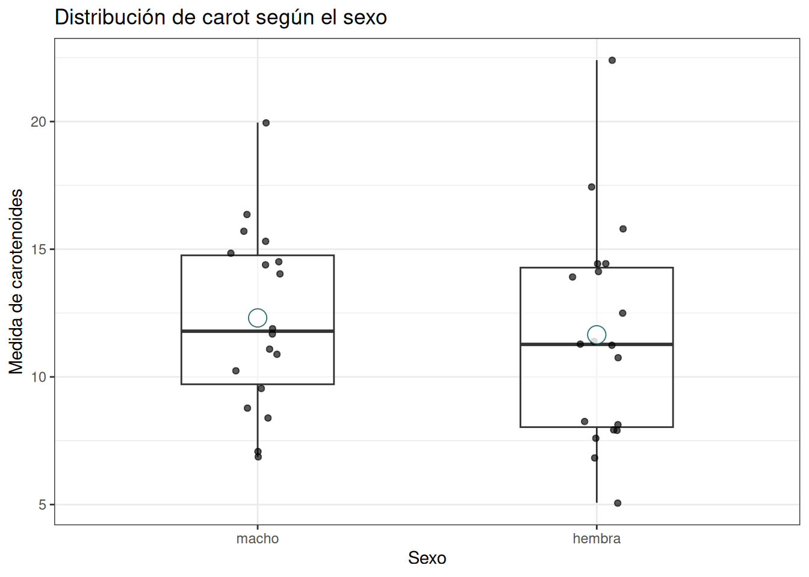
El diagrama de cajas muestra la mediana, los cuartiles y la dispersión. Como la prueba t compara medias, es interesante añadir la media (punto gordo) y las observaciones individuales.
Evaluación de los supuestos
Normalidad
Prueba de Shapiro–Wilk: La hipótesis nula (H0) es que los datos proceden de una distribución normal. La interpretación es:
p < 0.05: existe evidencia de desviación respecto a la normalidad;p ≥ 0.05: no se ha detectado evidencia suficiente para rechazar la normalidad.
Un resultado no significativo no demuestra que los datos sean normales. La prueba debe interpretarse junto con los gráficos Q–Q, el tamaño muestral y la presencia de valores extremos.
perdices2004_ene %>%
filter(!is.na(carot)) %>%
group_by(sexo) %>%
summarise(
n = n(),
W = unname(shapiro.test(carot)$statistic),
p_value = shapiro.test(carot)$p.value,
.groups = "drop"
)
## # A tibble: 2 × 4
## sexo n W p_value
## <fct> <int> <dbl> <dbl>
## 1 macho 18 0.965 0.709
## 2 hembra 19 0.947 0.356Los resultados no significativos indican que no se ha detectado evidencia suficiente de desviación respecto a la normalidad.
Gráfico Q–Q
Mostrar código
perdices2004_ene %>%
filter(
!is.na(carot),
!is.na(sexo)
) %>%
ggplot(aes(sample = carot)) +
stat_qq() +
stat_qq_line(col = "red") +
facet_wrap(~ sexo) +
labs(
x = "Cuantiles teóricos",
y = "Cuantiles observados"
) +
theme_bw()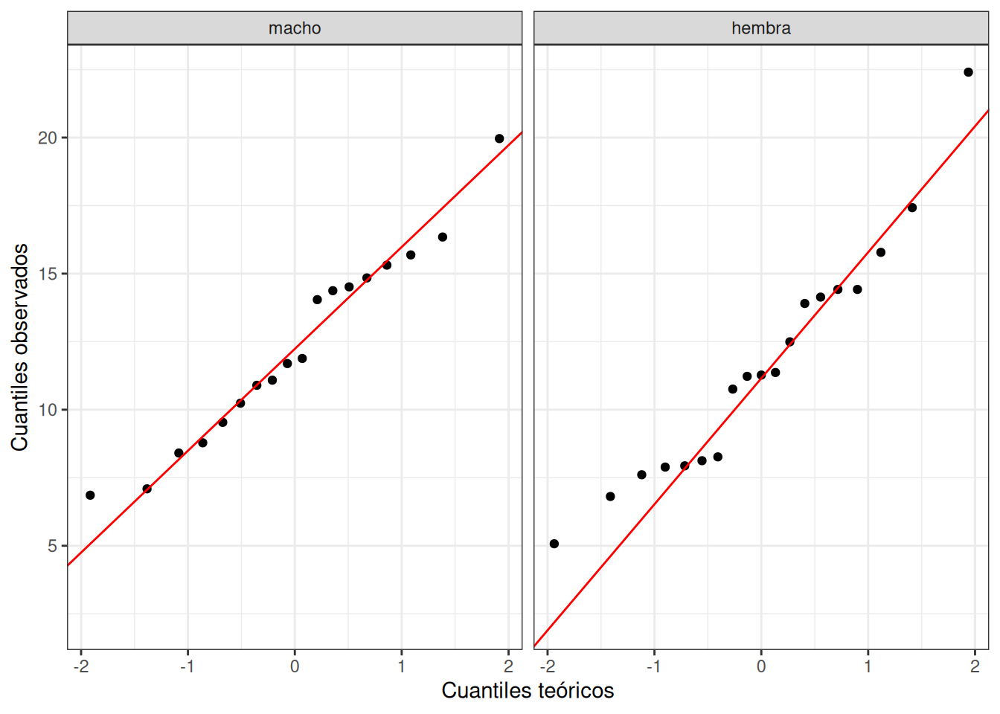
Si los puntos siguen aproximadamente la línea, los datos son compatibles con una distribución normal. Debemos prestar especial atención a curvaturas sistemáticas, asimetrías y observaciones alejadas en las colas.
Varianza entre grupos:
Prueba de Levene: se utiliza para evaluar si la varianza entre distintos grupos es similar. La interpretación es:
p < 0.05: rechazas la igualdad de varianzas. Hay evidencia de heterocedasticidad.p ≥ 0.05: no rechazas la igualdad de varianzas. No hay evidencia suficiente para afirmar que sean distintas.
car::leveneTest(carot ~ sexo, data = perdices2004_ene)
## Levene's Test for Homogeneity of Variance (center = median)
## Df F value Pr(>F)
## group 1 0.2535 0.6178
## 35Los resultados del test de Levene para nuestra muestra indican que no hay evidencia para decir que las varianzas entre grupos son desiguales.
Prueba t
La prueba de Welch se puede aplicar independientemente del resultado de Levene, ya que no presupone igualdad de varianzas, y además es una prueba más robusta.
Por defecto, la funcion
t.test()presupone que la varianza entre dos grupos no es igual (var.equal = FALSE) y, por tanto, calcula la prueba t de Welch.
resultado_t <- t.test(
carot ~ sexo,
data = perdices2004_ene,
var.equal = FALSE,
conf.level = 0.95
)
resultado_t
##
## Welch Two Sample t-test
##
## data: carot by sexo
## t = 0.51179, df = 34.426, p-value = 0.6121
## alternative hypothesis: true difference in means between group macho and group hembra is not equal to 0
## 95 percent confidence interval:
## -1.960151 3.280530
## sample estimates:
## mean in group macho mean in group hembra
## 12.30875 11.64856La salida proporciona:
- las medias estimadas de ambos grupos;
- el estadístico
t; - los grados de libertad;
- el valor
p; - el intervalo de confianza del 95 % para la diferencia de medias.
No se detectaron diferencias estadísticamente significativas en la medida de carotenoides (carot)entre machos y hembras en enero de 2004 (t34.43=0.51, p=0.612, IC del 95 % para la diferencia [−1.96, 3.28]).
5.2.2. Variable ordinal: Prueba de Wilcoxon-Mann–Whitney
¿Existen diferencias en la distribución de la puntuación del anillo periocular (score) entre machos y hembras?
La prueba de Wilcoxon-Mann–Whitney permite comparar la posición de las distribuciones de dos grupos mediante sus rangos. Los principales aspectos que debemos comprobar son:
- Independencia (depende del diseño del estudio y no puede comprobarse mediante un test estadístico).
- Variable respuesta al menos ordinal y dos grupos independientes.
Para interpretar el contraste como una diferencia de posición o mediana, las distribuciones deberían tener formas aproximadamente comparables.
Al igual que para la prueba anterior, lo primero que tenemos que hacer es conocer nuestros datos. Para ello haremos un resumen de los mismos y realizaremos una visualización.
Estadísticos descriptivos
perdices2004_ene %>%
filter(!is.na(score)) %>%
group_by(sexo) %>%
summarise(
n = n(),
mediana = median(score),
q1 = quantile(score, 0.25),
q3 = quantile(score, 0.75),
rango_intercuartilico = IQR(score),
.groups = "drop"
)
## # A tibble: 2 × 6
## sexo n mediana q1 q3 rango_intercuartilico
## <fct> <int> <dbl> <dbl> <dbl> <dbl>
## 1 macho 34 3 2 3.75 1.75
## 2 hembra 37 3 2 3 1Visualizacion gráfica
Mostrar código
score_frecuencias <- perdices2004_ene %>%
filter(!is.na(score)) %>%
count(sexo, score) %>%
group_by(sexo) %>%
mutate(proporcion = n / sum(n)) %>%
ungroup()
ggplot(
score_frecuencias,
aes(
x = factor(score),
y = proporcion,
fill = sexo)
) +
geom_col(position = "dodge") +
labs(
x = "Puntuación de color",
y = "Proporción",
fill = "Sexo",
title = "Distribución de las puntuaciones por sexo"
) +
scale_fill_manual(values = c("#004E4C", "#7C4D87")) +
theme_bw()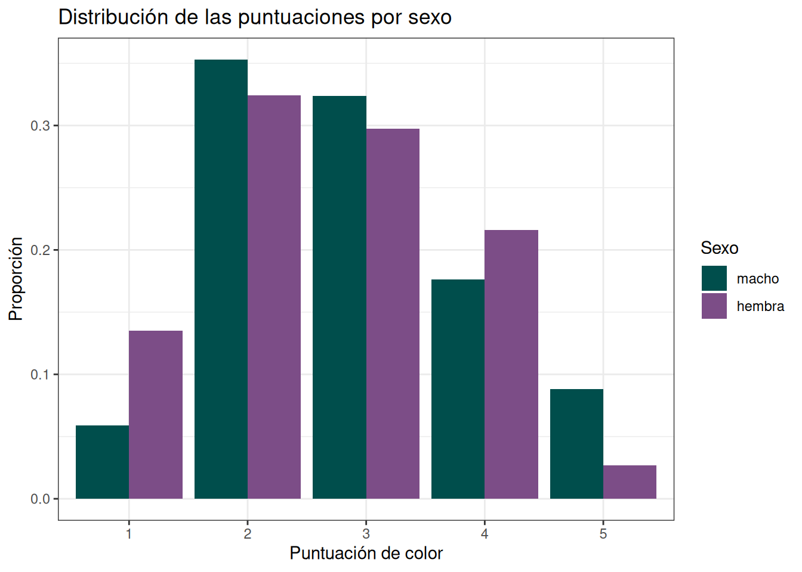
Prueba de Wilcoxon-Mann–Whitney
resultado_mann_whitney <- wilcox.test(
score ~ sexo,
data = perdices2004_ene,
exact = FALSE
)
resultado_mann_whitney
##
## Wilcoxon rank sum test with continuity correction
##
## data: score by sexo
## W = 686, p-value = 0.4985
## alternative hypothesis: true location shift is not equal to 0La prueba de Wilcoxon-Mann-Whitney no mostró diferencias estadísticamente significativas en el color del anillo periocular entre machos y hembras, W = 686, p = 0.4985, nM = 34, nH = 37.
Los resultados obtenidos sugieren que no se han detectado diferencias estadísticamente significativas en el color del anillo periocular entre ambos sexos.
AdvertenciaEjemplo didáctico: incumplimiento de la independencia
Los análisis siguientes (apartado 5.3 y 5.4) no son adecuados para responder a las preguntas que se van a plantear.
Ello se debe a que un mismo individuo (ring) ha sido medido en varios meses. Por tanto, las filas no representan observaciones independientes y los resultados obtenidos no deben considerarse válidos. Para que estos análisis fueran adecuados, cada individuo debería aportar una única observación y los individuos comparados entre meses deberían ser diferentes e independientes.
Los ejemplos de dichos apartados deben considerarse exclusivamente bajo la circunstancia de aprender cómo deberían realizarse estos análisis en caso de que los datos que se dispusieran a lo largo de los distintos meses no correspondieran a los mismos individuos.
El apartado 5.5 muestra los análisis que deben realizarse cuando existen medidas repetidas o dependencia de las observaciones.
5.3. Comparación entre más de 2 grupos independientes
Vamos a estudiar ahora si existen diferencias en los parámetros anteriores en los distintos meses del año. Para ello lo primero que tenemos que hacer es preparar nuestros datos:
perdices2004 <- perdices %>% filter(year == "2004") %>% droplevels()
nrow(perdices2004)
## [1] 225
levels(perdices2004$mes)
## [1] "1" "3" "4" "5"Con los datos preparados podemos decir que tenemos 225 datos para el año 2004 obtenidos en 4 meses diferentes.
5.3.1. ANOVA
Nuestra pregunta a responder es ¿varía la cantidad de carotenoides en las perdices en función del mes del año?
Este tipo de prueba puede utilizarse siempre y cuando se cumpla una serie de supuestos:
- Variable respuesta cuantitativa,
- Independencia,
- Distribución aproximadamente normal dentro de cada grupo. Es preferible evaluar la normalidad de los residuos,
- Varianza aproximadamente homogénea,
- Ausencia de valores extremos influyentes.
Lo primero de todo es conocer cómo son los datos que queremos analizar:
Estadísticos descriptivos
perdices2004 %>%
filter(!is.na(carot)) %>%
group_by(mes) %>%
summarise(
n = n(),
media = mean(carot),
desviacion_tipica = sd(carot),
mediana = median(carot),
rango_intercuartilico = IQR(carot),
.groups = "drop"
)
## # A tibble: 4 × 6
## mes n media desviacion_tipica mediana rango_intercuartilico
## <fct> <int> <dbl> <dbl> <dbl> <dbl>
## 1 1 37 12.0 3.90 11.4 6.01
## 2 3 36 16.5 4.50 16.7 6.62
## 3 4 41 17.3 4.88 18.1 6.53
## 4 5 35 11.1 5.53 11.2 9.65Visualización gráfica
Mostrar código
perdices2004 %>%
filter(!is.na(carot)) %>%
ggplot(aes(x = mes, y = carot)) +
geom_boxplot(
width = 0.45,
alpha = 0.5
) +
geom_jitter(
width = 0.08,
alpha = 0.65
) +
stat_summary(
fun = mean,
geom = "point",
shape = 16,
col = "#004E4C",
size = 5,
fill = "white",
alpha = 0.8
) +
labs(
x = "Mes",
y = "Medida de carotenoides",
title = "Distribución de carot según el mes"
) +
theme_bw()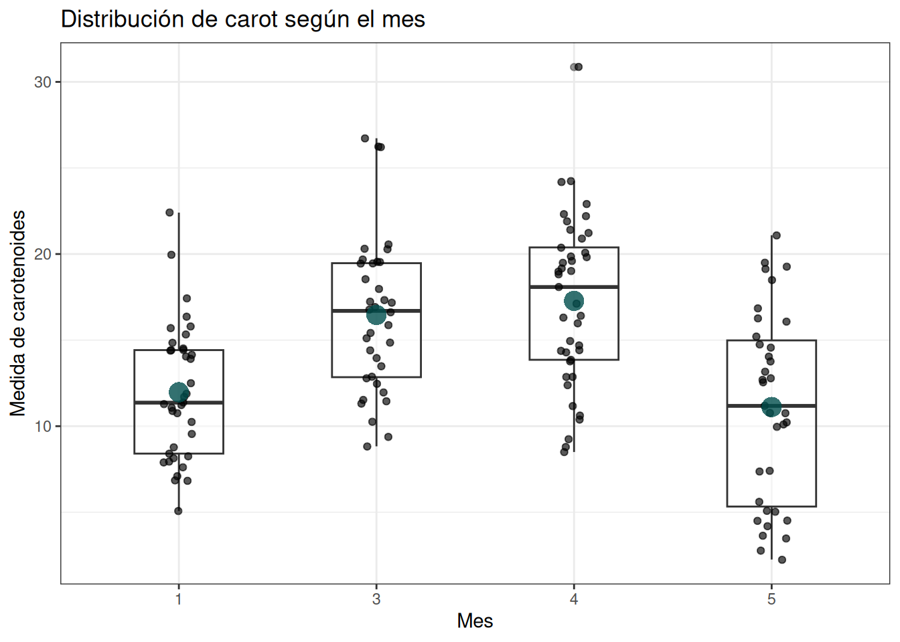
Los valores del mes 5 presentan un patrón algo diferente al de los demás meses y deben revisarse antes de interpretar el análisis.
Esta exploración inicial nos debe servir para encontrar posibles errores en la base de datos: ¿estamos seguros que esos datos son correctos? ¿Puede ser que haya habido algún error como un problema de digitalización de la información o una mala medición en ese mes? ¿Puede deberse a una diferencia biológica real o una característica particular de los individuos muestreados, por ejemplo que hayan estado enfermos para obtener esas mediciones?
Es necesario revisar los datos antes de poder continuar con el análisis, ya que si hubiera datos que no son correctos podríamos estar deduciendo cosas que no son correctas (concepto GiGo: Garbage in, Garbage out).
Para este ejemplo continuaremos con los datos tal y como aparecen. Para un caso real en el que los datos hubieran sido tomados correctamente, deberían realizarse comprobaciones de sensibilidad, es decir, aplicar los test o pruebas con y sin esos datos, para determinar si considerarlos o no cambia los resultados y conclusiones que se obtienen. Un análisis de sensibilidad permite valorar la robustez de los resultados, pero no decide por sí mismo si los datos deben eliminarse: si se comprueba que los datos son válidos y que no tienen errores, el análisis principal debe conservarlos.
Evaluación de los supuestos
Normalidad. La hipótesis nula de la prueba de Shapiro–Wilk es que los datos proceden de una distribución normal.
perdices2004 %>%
filter(!is.na(carot)) %>%
group_by(mes) %>%
summarise(
n = n(),
W = unname(shapiro.test(carot)$statistic),
p_value = shapiro.test(carot)$p.value,
.groups = "drop"
)
## # A tibble: 4 × 4
## mes n W p_value
## <fct> <int> <dbl> <dbl>
## 1 1 37 0.965 0.288
## 2 3 36 0.955 0.148
## 3 4 41 0.972 0.407
## 4 5 35 0.949 0.105Gráfico Q–Q
Mostrar código
perdices2004 %>%
filter(
!is.na(carot),
!is.na(sexo)
) %>%
ggplot(aes(sample = carot)) +
stat_qq() +
stat_qq_line(col = "red") +
facet_wrap(~ mes) +
labs(
x = "Cuantiles teóricos",
y = "Cuantiles observados"
) +
theme_bw()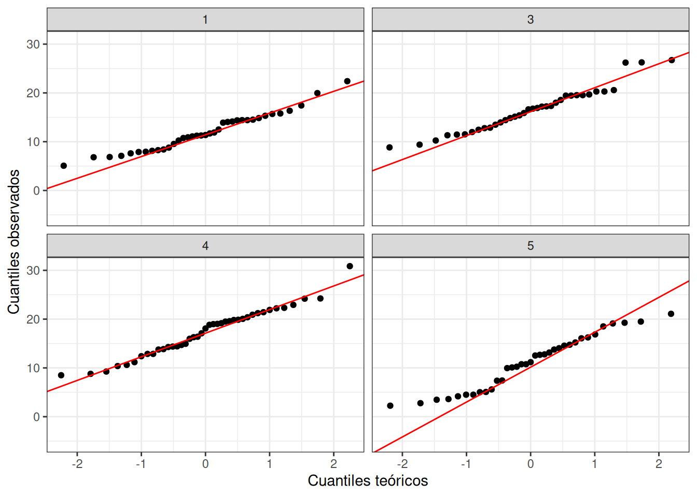
Varianza entre grupos
Prueba de Levene
car::leveneTest(carot ~ mes, data = perdices2004)
## Levene's Test for Homogeneity of Variance (center = median)
## Df F value Pr(>F)
## group 3 2.0716 0.1066
## 145Los resultados del test de Levene indican que no hay evidencia para decir que las varianzas entre grupos son desiguales.
No se observaron desviaciones graves respecto a los supuestos evaluados.
Realizaremos la prueba del ANOVA:
m_carot_mes <- aov(carot ~ mes,
data = perdices2004,
na.action = na.omit)
summary(m_carot_mes)
## Df Sum Sq Mean Sq F value Pr(>F)
## mes 3 1088 362.7 16.18 4.01e-09 ***
## Residuals 145 3251 22.4
## ---
## Signif. codes: 0 '***' 0.001 '**' 0.01 '*' 0.05 '.' 0.1 ' ' 1
## 76 observations deleted due to missingnessEl ANOVA mostró diferencias estadísticamente significativas en la cantidad de carotenoides entre los distintos meses del año, F3,76 = 16.18, p < 0.001, pero ¿cómo son las diferencias entre los meses? ¿son significativas todas ellas?
La visualización gráfica nos puede dar una idea sobre cuáles son las posibles diferencias que van a existir entre los meses, pero debemos hacer un test a posteriori (post-hoc) para verificarlo.
Test de Tukey: muestra cómo son las diferencias entre las combinaciones de los distintos niveles del factor.
TukeyHSD(m_carot_mes)
## Tukey multiple comparisons of means
## 95% family-wise confidence level
##
## Fit: aov(formula = carot ~ mes, data = perdices2004, na.action = na.omit)
##
## $mes
## diff lwr upr p adj
## 3-1 4.4893376 1.608116 7.370559 0.0004789
## 4-1 5.3083531 2.517597 8.099109 0.0000124
## 5-1 -0.8579732 -3.759982 2.044035 0.8685620
## 4-3 0.8190155 -1.992041 3.630072 0.8734247
## 5-3 -5.3473108 -8.268847 -2.425775 0.0000277
## 5-4 -6.1663263 -8.998685 -3.333968 0.0000005Los resultados obtenidos muestran que efectivamente hay diferencias significativas entre algunos meses, pero no entre todos ellos.
Recordatorio estos resultados son meramente didácticos por incumpliento de la independencia de los datos.
5.3.2. Kruskal-Wallis
Veamos ahora si existen diferencias en la puntuación otorgada al color del anillo periocular en función del mes.
Esta prueba también considera muestras independientes.
Mostrar código
score_freq_mes <- perdices2004 %>%
filter(!is.na(score)) %>%
count(mes, score) %>%
group_by(mes) %>%
mutate(proporcion = n / sum(n)) %>%
ungroup()
score_freq_mes
## # A tibble: 19 × 4
## mes score n proporcion
## <fct> <dbl> <int> <dbl>
## 1 1 1 7 0.0986
## 2 1 2 24 0.338
## 3 1 3 22 0.310
## 4 1 4 14 0.197
## 5 1 5 4 0.0563
## 6 3 1 3 0.0484
## 7 3 2 20 0.323
## 8 3 3 24 0.387
## 9 3 4 14 0.226
## 10 3 5 1 0.0161
## 11 4 2 16 0.390
## 12 4 3 14 0.341
## 13 4 4 10 0.244
## 14 4 5 1 0.0244
## 15 5 1 2 0.0556
## 16 5 2 11 0.306
## 17 5 3 13 0.361
## 18 5 4 8 0.222
## 19 5 5 2 0.0556
ggplot(
score_freq_mes,
aes(
x = factor(score),
y = proporcion)
) +
geom_col(
fill = "#004E4C",
alpha = 0.8) +
facet_wrap(~mes) +
labs(
x = "Puntuación de color",
y = "Proporción",
title = "Distribución de las puntuaciones del color del anillo periocular por mes"
) +
theme_bw()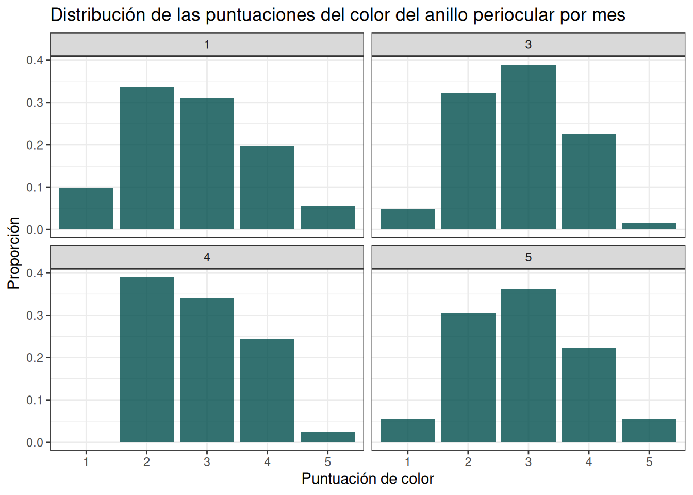
kruskal.test(score ~ mes, data = perdices2004)
##
## Kruskal-Wallis rank sum test
##
## data: score by mes
## Kruskal-Wallis chi-squared = 0.72391, df = 3, p-value = 0.8676El test de Kruskal-Wallis mostró que no se detectaron diferencias estadísticamente significativas en la puntuación otorgada al color del periocular entre los distintos meses del año, X23 = 0.72, p = 0.8676.
5.4. Comparación de efectos entre variables
¿Difieren las variaciones mensuales en carotenoides o en las puntuaciones del anillo periocular en perdices entre sexos?
Existe interacción cuando el efecto del mes no es igual entre los distintos niveles de los factores, en este caso entre machos y hembras.
5.4.1. ANOVA multifactorial
Se utiliza para una variable respuesta cuantitativa y dos o más factores. Se espera que los residuos del modelo sean aproximadamente normales.
Esta prueba se puede utilizar para contestar a la pregunta anterior ya que tenemos dos factores: sexo y mes.
Lo primero de todo es que vamos a ver cómo son nuestros datos:
Estadísticos descriptivos
perdices2004 %>%
filter(!is.na(carot), !is.na(sexo)) %>%
group_by(mes, sexo) %>%
summarise(
n = n(),
media = mean(carot),
desviacion_tipica = sd(carot),
mediana = median(carot),
rango_intercuartilico = IQR(carot),
.groups = "drop"
)
## # A tibble: 8 × 7
## mes sexo n media desviacion_tipica mediana rango_intercuartilico
## <fct> <fct> <int> <dbl> <dbl> <dbl> <dbl>
## 1 1 macho 18 12.3 3.55 11.8 5.05
## 2 1 hembra 19 11.6 4.28 11.3 6.25
## 3 3 macho 18 15.8 4.14 15.3 5.27
## 4 3 hembra 18 17.2 4.85 17.3 6.28
## 5 4 macho 18 17.9 4.04 18.0 6.70
## 6 4 hembra 23 16.8 5.48 18.1 7.23
## 7 5 macho 18 15.4 3.23 15.0 5.23
## 8 5 hembra 17 6.62 3.50 5.07 5.78Visualización gráfica
Mostrar código
perdices2004 %>%
filter(!is.na(carot), !is.na(sexo)) %>%
ggplot(aes(x = mes, y = carot)) +
geom_boxplot(
aes(fill = sexo),
width = 0.6,
alpha = 0.5,
outlier.shape = 5,
position = position_dodge(width = 0.75)
) +
geom_point(
aes(colour = sexo),
position = position_jitterdodge(
jitter.width = 0.08,
jitter.height = 0,
dodge.width = 0.75
),
alpha = 0.65,
size = 1.7
) +
stat_summary(
aes(group = sexo, colour = sexo),
fun = mean,
geom = "point",
position = position_dodge(width = 0.75),
shape = 21,
size = 3,
fill = "white",
stroke = 1
) +
scale_fill_manual(
values = c(
"macho" = "#004E4C",
"hembra" = "#7C4D87"
),
name = "Sexo"
) +
scale_colour_manual(
values = c(
"macho" = "#004E4C",
"hembra" = "#7C4D87"
),
name = "Sexo"
) +
labs(
x = "Mes",
y = "Medida de carotenoides",
title = "Distribución de carotenoides según el mes y el sexo"
) +
theme_bw()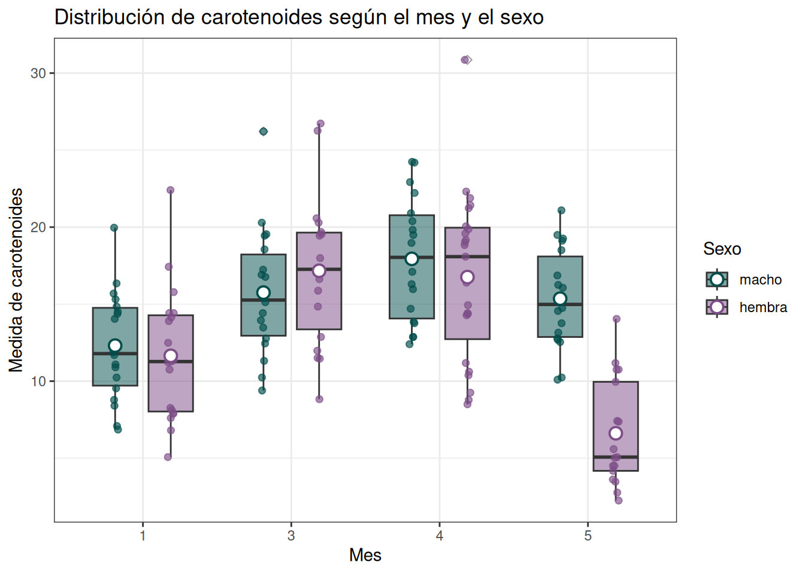
mod_carot_mes_sexo <- aov(carot ~ mes * sexo,
data = perdices2004, na.action = na.omit)
summary(mod_carot_mes_sexo)
## Df Sum Sq Mean Sq F value Pr(>F)
## mes 3 1088.1 362.7 20.076 6.82e-11 ***
## sexo 1 180.1 180.1 9.967 0.00195 **
## mes:sexo 3 523.9 174.6 9.667 7.62e-06 ***
## Residuals 141 2547.4 18.1
## ---
## Signif. codes: 0 '***' 0.001 '**' 0.01 '*' 0.05 '.' 0.1 ' ' 1
## 76 observations deleted due to missingnessEl resultado de la prueba estadística señala que detecta diferencias significativas debidas a la interacción entre sexo y mes. Para saber cuál es la diferencia entre grupos hay que hacer análisis a posteriori (post-hoc).
emmeans(mod_carot_mes_sexo, ~ mes | sexo) %>%
pairs(adjust = "tukey")
## sexo = macho:
## contrast estimate SE df t.ratio p.value
## mes1 - mes3 -3.442 1.42 141 -2.429 0.0762
## mes1 - mes4 -5.634 1.42 141 -3.976 0.0006
## mes1 - mes5 -3.048 1.42 141 -2.151 0.1422
## mes3 - mes4 -2.192 1.42 141 -1.547 0.4124
## mes3 - mes5 0.394 1.42 141 0.278 0.9925
## mes4 - mes5 2.586 1.42 141 1.825 0.2659
##
## sexo = hembra:
## contrast estimate SE df t.ratio p.value
## mes1 - mes3 -5.519 1.40 141 -3.948 0.0007
## mes1 - mes4 -5.110 1.32 141 -3.878 0.0009
## mes1 - mes5 5.031 1.42 141 3.546 0.0030
## mes3 - mes4 0.409 1.34 141 0.306 0.9900
## mes3 - mes5 10.550 1.44 141 7.339 <0.0001
## mes4 - mes5 10.141 1.36 141 7.459 <0.0001
##
## P value adjustment: tukey method for comparing a family of 4 estimates
emmeans(mod_carot_mes_sexo, ~ sexo | mes) %>%
pairs(adjust = "holm")
## mes = 1:
## contrast estimate SE df t.ratio p.value
## macho - hembra 0.66 1.40 141 0.472 0.6375
##
## mes = 3:
## contrast estimate SE df t.ratio p.value
## macho - hembra -1.42 1.42 141 -1.000 0.3190
##
## mes = 4:
## contrast estimate SE df t.ratio p.value
## macho - hembra 1.18 1.34 141 0.886 0.3774
##
## mes = 5:
## contrast estimate SE df t.ratio p.value
## macho - hembra 8.74 1.44 141 6.080 <0.0001Al igual que hacíamos antes con el resto de test comprobamos que se cumplen las asunciones bajo las cuales podemos aplicarlos. En este caso vamos a ver si se cumple la normalidad con los residuos:
shapiro.test(residuals(mod_carot_mes_sexo))
##
## Shapiro-Wilk normality test
##
## data: residuals(mod_carot_mes_sexo)
## W = 0.98193, p-value = 0.04728La prueba de Shapiro–Wilk detectó una desviación estadísticamente significativa respecto a la normalidad de los residuos (W=0.982, p=0.047). Veamos también el qqplot:
Mostrar código
tibble(resid = residuals(mod_carot_mes_sexo)) %>%
ggplot(aes(sample = resid)) +
stat_qq() +
stat_qq_line(col = "red") +
labs(
x = "Cuantiles teóricos",
y = "Cuantiles observados"
) +
theme_bw()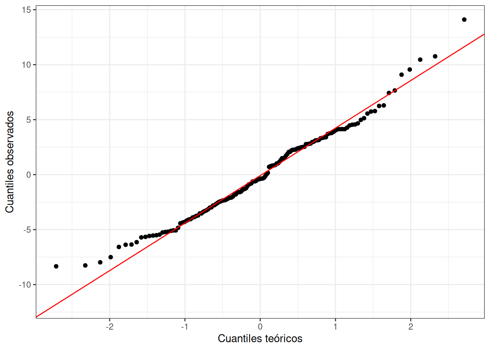
El gráfico Q–Q muestra un buen ajuste en la zona central, pero desviaciones sistemáticas en ambas colas, especialmente en la cola superior. Por tanto, la distribución no parece completamente normal y presenta cierta asimetría positiva, pero la desviación parece moderada.
5.5. Muestras dependientes y medidas repetidas
Vamos a repetir los análisis anteriores esta vez teniendo en cuenta que se han realizado distintas mediciones a lo largo del tiempo sobre una misma unidad muestral (e.g. individuos).
Estos análisis permiten comparar si un factor podría tener influencia sobre el cambio de alguna medición realizada (cuantitativa o cualitativa) a lo largo del tiempo.
5.5.1. Prueba t para muestras pareadas
En este caso vamos a observar si las mediciones de carotenoides medidas en invierno (mes 1) difieren de las mediciones realizadas en primavera (mes 4).
Lo primero que vamos a hacer es preparar los datos y hacernos una idea de cómo son:
carot_inv_pri <- perdices2004 %>%
filter(mes == "1" | mes == "4") %>%
select(ring, mes, carot) %>%
pivot_wider(id_cols = ring,
names_from = mes,
names_prefix = "mes",
values_from = carot) %>%
drop_na(mes1, mes4) # quitar filas que no contengan valoresMostrar código
carot_inv_pri %>%
pivot_longer(
cols = c(mes1, mes4),
names_to = "mes",
values_to = "carot"
) %>%
ggplot(aes(x = mes, y = carot)) +
geom_boxplot(
width = 0.45,
alpha = 0.5
) +
geom_jitter(
width = 0.08,
alpha = 0.65
) +
stat_summary(
fun = mean,
geom = "point",
shape = 16,
col = "#004E4C",
size = 5,
fill = "white",
alpha = 0.8
) +
labs(
x = "Mes",
y = "Medida de carotenoides",
title = "Distribución de carot en invierno (izq.) y primavera (dcha.)"
) +
theme_bw()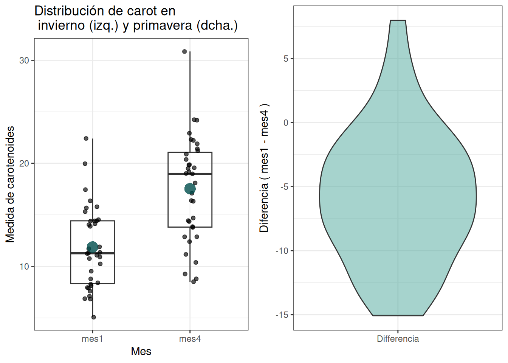
Vemos que los valores de los carotenoides aparentemente podrían ser más bajos durante el invierno que en primavera.
Al igual que antes de realizar los test anteriores evaluamos si las diferencias entre las dos mediciones presentan una distribución aproximadamente normal.
shapiro.test(carot_inv_pri$mes1 - carot_inv_pri$mes4)
##
## Shapiro-Wilk normality test
##
## data: carot_inv_pri$mes1 - carot_inv_pri$mes4
## W = 0.97914, p-value = 0.7311Mostrar código
ggplot(carot_inv_pri, aes(sample = (mes1 - mes4))) +
stat_qq() +
stat_qq_line(col = "red") +
labs(
x = "Cuantiles teóricos",
y = "Cuantiles observados"
) +
theme_bw()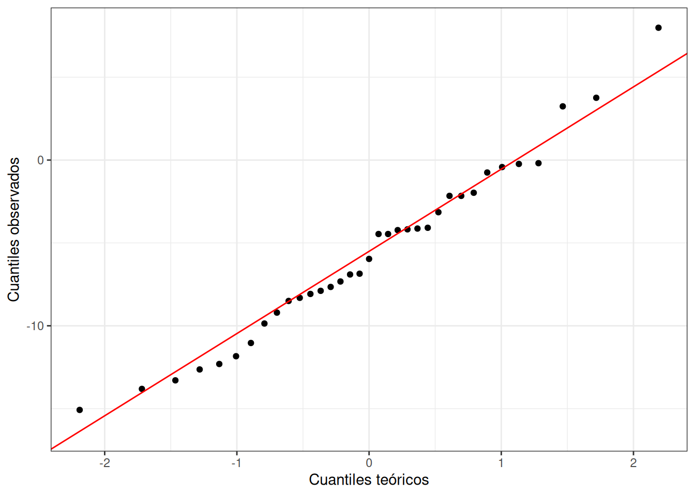
Finalmente realizaremos el análisis estadístico:
ttest_par_estaciones <- t.test(carot_inv_pri$mes1,
carot_inv_pri$mes4,
paired = TRUE,
conf.level = 0.95)
ttest_par_estaciones
##
## Paired t-test
##
## data: carot_inv_pri$mes1 and carot_inv_pri$mes4
## t = -6.3018, df = 34, p-value = 3.503e-07
## alternative hypothesis: true mean difference is not equal to 0
## 95 percent confidence interval:
## -7.487779 -3.836017
## sample estimates:
## mean difference
## -5.661898Los resultados obtenidos t34 = -6.3018 y p.valor < 0.001 n = 35, parecen indicar que hay diferencias en las mediciones de los carotenoides siendo menor en enero que en abril entre los individuos con mediciones disponibles en ambos meses.
5.5.2. test de Wilcoxon de medidas pareadas
En este caso vamos a observar si las puntuaciones otorgadas al anillo periocular en invierno (mes 1) difieren de las mediciones realizadas en primavera (mes 4).
Lo primero que vamos a hacer es preparar los datos y hacernos una idea de cómo son:
score_inv_pri <- perdices2004 %>%
filter(mes == "1" | mes == "4") %>%
select(ring, mes, score) %>%
pivot_wider(id_cols = ring,
names_from = mes,
names_prefix = "mes",
values_from = score) %>%
drop_na(mes1, mes4) # quitar filas que no contengan valores
score_inv_pri
## # A tibble: 40 × 3
## ring mes1 mes4
## <fct> <dbl> <dbl>
## 1 39 1 2
## 2 41 4 3
## 3 47 3 3
## 4 51 1 2
## 5 53 2 3
## 6 64 3 2
## 7 70 3 2
## 8 83 2 2
## 9 89 3 3
## 10 210 4 4
## # ℹ 30 more rowsMostrar código
score_inv_pri %>%
pivot_longer(
cols = c(mes1, mes4),
names_to = "mes",
values_to = "score"
) %>%
count(mes, score) %>%
group_by(mes) %>%
mutate(proporcion = n / sum(n)) %>%
ungroup() %>%
ggplot(aes(factor(score), proporcion)) +
geom_col(fill = "#004E4C", alpha = 0.8) +
facet_wrap(~ mes) +
labs(
x = "Puntuación de color",
y = "Proporción"
) +
theme_bw()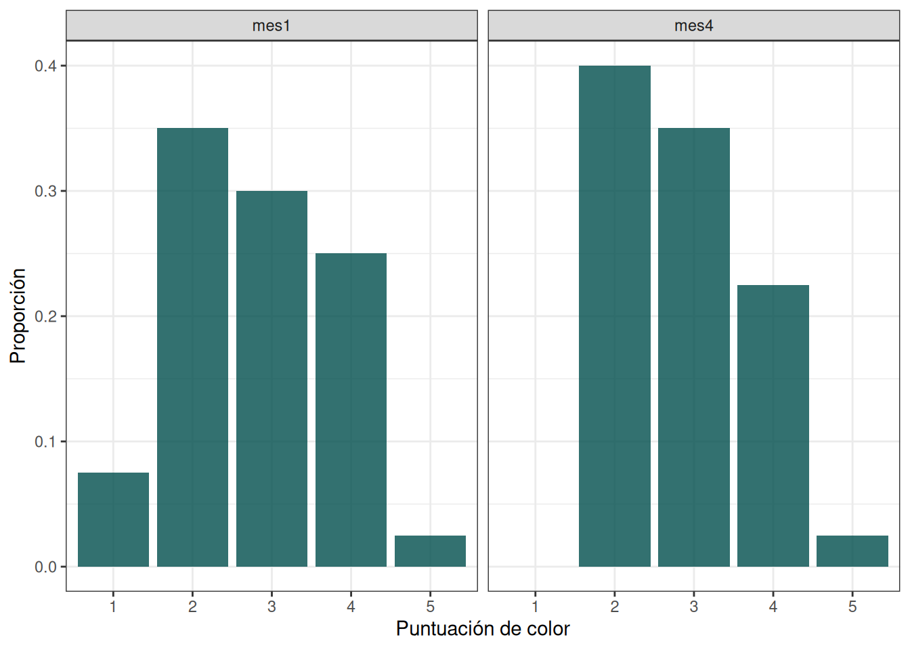
Vemos que los valores de las puntuaciones recibidas no parecen diferir en gran medida entre invierno y primavera. No obstante, realizaremos el test estadístico para evaluar si se detectan diferencias entre ambas mediciones.
wilcox.test(score_inv_pri$mes1,
score_inv_pri$mes4,
paired = TRUE,
exact = FALSE)
##
## Wilcoxon signed rank test with continuity correction
##
## data: score_inv_pri$mes1 and score_inv_pri$mes4
## V = 134, p-value = 0.6295
## alternative hypothesis: true location shift is not equal to 0Los resultados obtenidos del test de Wilcoxon para muestras pareadas señalan que no se detectaron diferencias estadísticamente significativas entre el mes de invierno y el de primavera en las puntuaciones del anillo periocular (V = 134, p.value = 0.6295).
5.5.3. ANOVA de medidas repetidas
¿Los valores de carotenoides difieren a lo largo de los meses? Sabiendo que nuestros datos son pareados la prueba que debe realizarse es un ANOVA de medidas repetidas.
En nuestro caso ya hemos estudiado previamente cómo eran nuestros datos y si cumplían con los supuestos para los que se puede aplicar la prueba estadística (ver apartados anteriores), por lo que no los repetiremos y pasaremos directamente a realizar el ANOVA de medidas repetidas:
mod_rep_meas <- aov(
carot ~ mes + Error(ring / mes), # indicale la estructura jerárquica:
# ring identifica al individuo y mes es el factor intraindividual
data = perdices2004
)Si ejecutáramos este modelo con todos los datos, R mostraría un aviso indicando que el modelo es singular, porque el diseño de medidas repetidas está incompleto, es decir, hay individuos para los que no se tiene la medición de los carotenoides para alguno de los meses.
Este tipo de análisis estadístico tiene sus limitaciones: obliga a que todas las unidades muestrales tengan el mismo número de medidas repetidas. En el caso del ejemplo si un individuo por ejemplo se muere durante el periodo de muestreo completo, la información recabada no podría ser utilizada ya que se debería eliminar al individuo del análisis, es decir, para este tipo de análisis se debe considerar sólo los individuos para los que se tienen todas las medidas repetidas. Existen otros análisis estadísticos (e.g. modelos mixtos) que sí permiten que haya medidas repetidas con datos incompletos (NA). Los modelos mixtos se explicarán en la asignatura optativa Análisis avanzado de datos en bioestadística del segundo semestre.
Por ello lo primero que tenemos que hacer es preprar nuestros datos y quedarnos sólo con aquellos individuos que tengan valores en los cuatro meses:
perdices_carot_rep_meas <-
perdices2004 %>%
select(ring, sexo, mes, carot) %>%
group_by(ring) %>%
filter(
n_distinct(mes) == 4, # quedate solo con los individuos
# que tengan todas las mediciones
all(!is.na(carot)) # cuando esas mediciones contengan un valor
) %>%
ungroup() %>%
mutate(
ring = factor(ring),
mes = factor(mes)
) %>%
droplevels()
perdices_carot_rep_meas
## # A tibble: 136 × 4
## ring sexo mes carot
## <fct> <fct> <fct> <dbl>
## 1 39 hembra 1 8.13
## 2 41 hembra 1 13.9
## 3 47 macho 1 15.3
## 4 51 hembra 1 10.8
## 5 53 hembra 1 11.2
## 6 70 hembra 1 5.07
## 7 89 hembra 1 7.61
## 8 210 hembra 1 7.94
## 9 212 macho 1 9.53
## 10 225 hembra 1 15.8
## # ℹ 126 more rows
n_distinct(perdices_carot_rep_meas$ring)
## [1] 34Hay 34 individuos con mediciones completas en los 4 meses.
mod_med_rep_full <- aov(carot ~ mes + Error(ring / mes),
data = perdices_carot_rep_meas)
summary(mod_med_rep_full)
##
## Error: ring
## Df Sum Sq Mean Sq F value Pr(>F)
## Residuals 33 849.9 25.75
##
## Error: ring:mes
## Df Sum Sq Mean Sq F value Pr(>F)
## mes 3 1118 372.7 17.18 4.64e-09 ***
## Residuals 99 2147 21.7
## ---
## Signif. codes: 0 '***' 0.001 '**' 0.01 '*' 0.05 '.' 0.1 ' ' 1El ANOVA de medidas repetidas detectó diferencias estadísticamente significativas en la media de la medida de carotenoides entre los cuatro meses, (F3, 99 = 17.18, p < 0.001, n = 34 individuos), pero ¿entre qué meses se encuentran estas diferencias?
TukeyHSD(mod_med_rep_full)Vemos que la función que hemos estado utilizando para los análisis post-hoc no puede aplicarse para este tipo de objeto. Ello ocurre cuando utilizamos el término Error dentro de la función aov(). Para realizar este análisis a posteriori, por tanto, se deberá utilizar la función: pairs() del paquete emmeans.
# calcula las medias estimadas por mes a partir de tu modelo aov
medias_mes <- emmeans(mod_med_rep_full, ~ mes)
## Note: re-fitting model with sum-to-zero contrasts
# realiza las comparaciones a posteriori entre los niveles del factor
pairs(medias_mes, adjust = "tukey")
## contrast estimate SE df t.ratio p.value
## mes1 - mes3 -4.533 1.13 99 -4.013 0.0007
## mes1 - mes4 -5.770 1.13 99 -5.109 <0.0001
## mes1 - mes5 0.952 1.13 99 0.843 0.8339
## mes3 - mes4 -1.238 1.13 99 -1.096 0.6929
## mes3 - mes5 5.484 1.13 99 4.855 <0.0001
## mes4 - mes5 6.722 1.13 99 5.951 <0.0001
##
## P value adjustment: tukey method for comparing a family of 4 estimatesLas comparaciones a posteriori con corrección de Tukey mostraron que la medida de carotenoides fue significativamente menor en enero que en marzo y abril. También fue significativamente menor en mayo que en marzo y abril. No se detectaron diferencias entre enero y mayo ni entre marzo y abril.
No obstante, antes veíamos que el sexo podría estar influyendo también en los resultados obtenidos. La existencia de una posible interacción debe ser evaluada y en caso de existir, los resultados no deben plantearse sólo respecto al efecto de una variable única sino teniéndose en cuenta cómo influye la interacción. Para ello:
mod_med_rep_inter <- aov(carot ~ mes * sexo + Error(ring / mes),
data = perdices_carot_rep_meas)
summary(mod_med_rep_inter)
##
## Error: ring
## Df Sum Sq Mean Sq F value Pr(>F)
## sexo 1 166.6 166.63 7.804 0.00873 **
## Residuals 32 683.3 21.35
## ---
## Signif. codes: 0 '***' 0.001 '**' 0.01 '*' 0.05 '.' 0.1 ' ' 1
##
## Error: ring:mes
## Df Sum Sq Mean Sq F value Pr(>F)
## mes 3 1118.2 372.7 21.94 6.63e-11 ***
## mes:sexo 3 516.7 172.2 10.14 7.28e-06 ***
## Residuals 96 1630.6 17.0
## ---
## Signif. codes: 0 '***' 0.001 '**' 0.01 '*' 0.05 '.' 0.1 ' ' 1Los resultados obtenidos señalan que existe una interacción entre el sexo y el mes (F3, 96 = 10.14, p < 0.001). Esto quiere decir que el patrón mensual de la medida de los carotenos difieren entre machos y hembras. El efecto principal del mes (F3, 96 = 21.94, p < 0.001) y el del sexo (F1, 32 = 7.80, p = 0.009) resultaron estadísticamente significativos.
¿Qué comparaciones permiten explicar la interacción detectada? El análisis de la interacción se abordará desde una doble perspectiva:
- evaluando de los carotenos a lo largo de los meses de forma independiente para cada sexo, y
- comparando las diferencias entre machos y hembras dentro de cada mes específico.
# calcula las medias estimadas por mes a partir de tu modelo aov
medias_mes_inter <- emmeans(mod_med_rep_inter,
~ mes | sexo) # es importante introducir la interaccion
## Note: re-fitting model with sum-to-zero contrasts
# realiza las comparaciones a posteriori entre los niveles del factor
pairs(medias_mes_inter, adjust = "tukey")
## sexo = macho:
## contrast estimate SE df t.ratio p.value
## mes1 - mes3 -3.965 1.41 96 -2.805 0.0305
## mes1 - mes4 -5.899 1.41 96 -4.173 0.0004
## mes1 - mes5 -3.362 1.41 96 -2.379 0.0881
## mes3 - mes4 -1.934 1.41 96 -1.368 0.5223
## mes3 - mes5 0.602 1.41 96 0.426 0.9739
## mes4 - mes5 2.536 1.41 96 1.794 0.2824
##
## sexo = hembra:
## contrast estimate SE df t.ratio p.value
## mes1 - mes3 -5.100 1.41 96 -3.608 0.0027
## mes1 - mes4 -5.642 1.41 96 -3.991 0.0007
## mes1 - mes5 5.266 1.41 96 3.725 0.0018
## mes3 - mes4 -0.542 1.41 96 -0.383 0.9808
## mes3 - mes5 10.367 1.41 96 7.333 <0.0001
## mes4 - mes5 10.908 1.41 96 7.716 <0.0001
##
## P value adjustment: tukey method for comparing a family of 4 estimates# calcula las medias estimadas por mes a partir de tu modelo aov
medias_mes_inter <- emmeans(mod_med_rep_inter,
~ sexo | mes) # es importante introducir la interaccion
## Note: re-fitting model with sum-to-zero contrasts
# realiza las comparaciones a posteriori entre los niveles del factor
pairs(medias_mes_inter, adjust = "tukey")
## mes = 1:
## contrast estimate SE df t.ratio p.value
## macho - hembra 0.276 1.46 127 0.189 0.8500
##
## mes = 3:
## contrast estimate SE df t.ratio p.value
## macho - hembra -0.859 1.46 127 -0.589 0.5568
##
## mes = 4:
## contrast estimate SE df t.ratio p.value
## macho - hembra 0.533 1.46 127 0.366 0.7152
##
## mes = 5:
## contrast estimate SE df t.ratio p.value
## macho - hembra 8.905 1.46 127 6.106 <0.0001El análisis a posteriori reveló que en ambos sexos se detectaron valores mayores en marzo y abril respecto a en enero (p < 0.05 en todos los casos). Sin embargo, el comportamiento difirió en mayo, disminuyendo significativamente en las hembras la medida respecto a marzo y abril (p < 0.001), cayendo incluso por debajo de sus valores iniciales de enero (p = 0.0018), mientras que los machos no mostraron una diferencia significativa (p = 0.088). Como consecuencia de esta caída, en mayo los machos presentaron niveles de carotenos significativamente superiores a los de las hembras (diferencia estimada = 8.90; t127 = 6.11, p < 0.0001).
Prueba de Friedman (sólo de una vía)
Lo primero que haremos será preparar los datos con nuestra variable de interés: la puntuación de la coloración del anillo periocular (score).
perdices_score_rep_meas <-
perdices2004 %>%
select(ring:score, -hc, -year) %>%
group_by(ring) %>%
filter(
n_distinct(mes) == 4, # quedate solo con los individuos
# que tengan todas las mediciones
all(!is.na(score)) # cuando esas mediciones contengan un valor
) %>%
ungroup() %>%
mutate(
ring = factor(ring),
mes = factor(mes)
) %>%
droplevels()
perdices_score_rep_meas
## # A tibble: 136 × 5
## ring mes sexo carot score
## <fct> <fct> <fct> <dbl> <dbl>
## 1 39 1 hembra 8.13 1
## 2 41 1 hembra 13.9 4
## 3 47 1 macho 15.3 3
## 4 53 1 hembra 11.2 2
## 5 64 1 hembra 6.81 3
## 6 70 1 hembra 5.07 3
## 7 89 1 hembra 7.61 3
## 8 210 1 hembra 7.94 4
## 9 212 1 macho 9.53 2
## 10 225 1 hembra 15.8 2
## # ℹ 126 more rows
n_distinct(perdices_score_rep_meas$ring)
## [1] 34mod_score_med_rep_full <- friedman.test(
score ~ mes | ring,
data = perdices_score_rep_meas
)
mod_score_med_rep_full
##
## Friedman rank sum test
##
## data: score and mes and ring
## Friedman chi-squared = 3.2972, df = 3, p-value = 0.348La prueba de Friedman no detectó diferencias estadísticamente significativas en la puntuación dada a la coloración del anillo periocular entre los cuatro meses (Chi23 = 3.2972 p.valor = 0.348, n = 34).
5.6. Relaciones entre variables: correlación y regresión
Cargamos la segunda base de datos paloma_torcaz.xls. Al igual que hicimos con la base de datos anterior lo primero que hacemos es unificar su nomenclatura y ver cómo son los datos que hemos importado. En caso de que sea necesario debes transformar las columnas al tipo de dato que corresponda.
palomas_raw <- read_excel("0_data/paloma_torcaz.xls",
sheet = 1)
class(palomas_raw)
## [1] "tbl_df" "tbl" "data.frame"
glimpse(palomas_raw)
## Rows: 53
## Columns: 15
## $ FECHA <dttm> 2004-02-06, 2004-02-06, 2004-02-06, 2004-02-0…
## $ LOCALIDAD <chr> "S", "S", "S", "S", "S", "S", "S", "S", "C", "…
## $ SEXO <dbl> 1, 2, 1, 2, 2, 1, 1, 1, 1, 1, 1, 1, 2, 2, 1, 1…
## $ EDAD <dbl> 1, 1, 1, 2, 2, 1, 1, 2, 1, 1, 1, NA, 1, 1, 1, …
## $ PESO <dbl> 412.0, 455.0, 475.0, 474.0, 441.0, 482.0, 409.…
## $ LTOTAL <dbl> 41.5, 40.4, 43.5, 42.5, 40.8, 41.9, 43.0, 45.0…
## $ LALA <dbl> 22.70, 24.90, 24.70, 25.00, 24.10, 24.90, 24.0…
## $ LQUILLA <dbl> 75.82, 77.70, 80.32, 78.30, 75.50, 75.74, 77.8…
## $ LTARSO <dbl> 32.845, 32.605, 34.180, 33.180, 31.635, 32.765…
## $ BAZO <dbl> 0.253, 0.165, 0.103, 0.122, 0.257, 0.915, 0.17…
## $ GRASA_MOLLEJA <dbl> NA, 1.7889908, 1.2214200, 3.9823009, 4.8620404…
## $ ENGRASAMIENTO <dbl> 4, 4, 3, 4, 4, 3, 3, 4, 4, 4, 4, 5, 5, 4, 4, 5…
## $ GROSOR_MUSCULO_PECTORAL <dbl> 19.90, 24.08, 22.29, 22.86, 19.95, 21.77, 24.6…
## $ PESO_FABRIZIO <dbl> NA, NA, NA, NA, NA, NA, NA, NA, 0.140, 0.269, …
## $ MALOFAGOS <dbl> 3, 3, 3, 14, 13, 5, 15, 10, NA, 3, 4, 5, 4, 4,…
palomas <- rename_with(palomas_raw, ~tolower(.x))
palomas <- palomas %>%
mutate(localidad = factor(localidad),
sexo = factor(sexo, levels = c(1, 2), labels = c("macho", "hembra")),
edad = factor(edad, levels = c(1, 2), labels = c("juvenil", "adulto"))
)
palomas
## # A tibble: 53 × 15
## fecha localidad sexo edad peso ltotal lala lquilla ltarso
## <dttm> <fct> <fct> <fct> <dbl> <dbl> <dbl> <dbl> <dbl>
## 1 2004-02-06 00:00:00 S macho juven… 412 41.5 22.7 75.8 32.8
## 2 2004-02-06 00:00:00 S hembra juven… 455 40.4 24.9 77.7 32.6
## 3 2004-02-06 00:00:00 S macho juven… 475 43.5 24.7 80.3 34.2
## 4 2004-02-06 00:00:00 S hembra adulto 474 42.5 25 78.3 33.2
## 5 2004-02-06 00:00:00 S hembra adulto 441 40.8 24.1 75.5 31.6
## 6 2004-02-06 00:00:00 S macho juven… 482 41.9 24.9 75.7 32.8
## 7 2004-02-06 00:00:00 S macho juven… 409 43 24 77.8 31.1
## 8 2004-02-06 00:00:00 S macho adulto 571 45 25.8 80.1 35.0
## 9 2003-09-08 00:00:00 C macho juven… 422. 41.5 23.9 80.9 33.0
## 10 2003-09-08 00:00:00 C macho juven… 390. 39 23.6 74.6 32.1
## # ℹ 43 more rows
## # ℹ 6 more variables: bazo <dbl>, grasa_molleja <dbl>, engrasamiento <dbl>,
## # grosor_musculo_pectoral <dbl>, peso_fabrizio <dbl>, malofagos <dbl>
glimpse(palomas)
## Rows: 53
## Columns: 15
## $ fecha <dttm> 2004-02-06, 2004-02-06, 2004-02-06, 2004-02-0…
## $ localidad <fct> S, S, S, S, S, S, S, S, C, C, C, C, C, C, C, C…
## $ sexo <fct> macho, hembra, macho, hembra, hembra, macho, m…
## $ edad <fct> juvenil, juvenil, juvenil, adulto, adulto, juv…
## $ peso <dbl> 412.0, 455.0, 475.0, 474.0, 441.0, 482.0, 409.…
## $ ltotal <dbl> 41.5, 40.4, 43.5, 42.5, 40.8, 41.9, 43.0, 45.0…
## $ lala <dbl> 22.70, 24.90, 24.70, 25.00, 24.10, 24.90, 24.0…
## $ lquilla <dbl> 75.82, 77.70, 80.32, 78.30, 75.50, 75.74, 77.8…
## $ ltarso <dbl> 32.845, 32.605, 34.180, 33.180, 31.635, 32.765…
## $ bazo <dbl> 0.253, 0.165, 0.103, 0.122, 0.257, 0.915, 0.17…
## $ grasa_molleja <dbl> NA, 1.7889908, 1.2214200, 3.9823009, 4.8620404…
## $ engrasamiento <dbl> 4, 4, 3, 4, 4, 3, 3, 4, 4, 4, 4, 5, 5, 4, 4, 5…
## $ grosor_musculo_pectoral <dbl> 19.90, 24.08, 22.29, 22.86, 19.95, 21.77, 24.6…
## $ peso_fabrizio <dbl> NA, NA, NA, NA, NA, NA, NA, NA, 0.140, 0.269, …
## $ malofagos <dbl> 3, 3, 3, 14, 13, 5, 15, 10, NA, 3, 4, 5, 4, 4,…Veamos cómo son los datos que contiene nuestra base de datos:
summary(palomas)
## fecha localidad sexo edad
## Min. :2003-09-08 00:00:00 C:23 macho :29 juvenil:28
## 1st Qu.:2003-09-08 00:00:00 S:30 hembra:23 adulto :24
## Median :2003-11-29 00:00:00 NAs : 1 NAs : 1
## Mean :2003-11-12 22:38:29
## 3rd Qu.:2004-02-06 00:00:00
## Max. :2004-02-06 00:00:00
##
## peso ltotal lala lquilla ltarso
## Min. :375.8 Min. : 4.9 Min. :22.65 Min. :70.55 Min. :31.07
## 1st Qu.:413.0 1st Qu.:40.8 1st Qu.:23.60 1st Qu.:76.42 1st Qu.:32.15
## Median :438.1 Median :41.9 Median :24.10 Median :77.66 Median :32.84
## Mean :443.9 Mean :40.7 Mean :25.10 Mean :77.59 Mean :32.88
## 3rd Qu.:467.1 3rd Qu.:42.8 3rd Qu.:24.80 3rd Qu.:79.21 3rd Qu.:33.45
## Max. :571.0 Max. :45.0 Max. :73.46 Max. :83.50 Max. :35.03
##
## bazo grasa_molleja engrasamiento grosor_musculo_pectoral
## Min. :0.1030 Min. :0.000 Min. :3.000 Min. : 9.42
## 1st Qu.:0.2110 1st Qu.:1.731 1st Qu.:3.000 1st Qu.:19.95
## Median :0.2620 Median :2.551 Median :4.000 Median :21.47
## Mean :0.3862 Mean :3.034 Mean :3.623 Mean :20.78
## 3rd Qu.:0.4210 3rd Qu.:4.550 3rd Qu.:4.000 3rd Qu.:22.76
## Max. :1.7080 Max. :7.334 Max. :5.000 Max. :24.74
## NAs :1 NAs :14 NAs :9
## peso_fabrizio malofagos
## Min. :0.1400 Min. : 0.000
## 1st Qu.:0.2802 1st Qu.: 2.000
## Median :0.4385 Median : 3.000
## Mean :0.4158 Mean : 4.192
## 3rd Qu.:0.5573 3rd Qu.: 5.000
## Max. :0.6720 Max. :16.000
## NAs :29 NAs :1Con estos datos podemos decir que:
- hemos muestreado en dos localidades,
localidad
- el
sexode los individuos se encuentra registrado: machos = 1 y hembras = 2 - la
edadde los individuos se encuentra registrada: juveniles = 1 y adultos = 2 - se han tomado mediciones estructurales de:
- la longitud total (
ltotal, desde la punta del pico hasta la cola), - longitud del ala (
lala), - longitud de la quilla (
lquilla), - longitud del tarso (
ltarso), - el
bazo, - la grasa de la molleja (
grasa_molleja): porcentaje de grasa envolviendo la molleja (peso de la grasa de la cápsula dividido entre peso de la molleja, en porcentaje), - el
engrasamiento: índice de engrasamiento en escala semicuantitativa de 1-5, - el grosor del musculo pectoral (
grosor_musculo_pectoral), - el peso de la bolsa de Fabricio (
peso_fabrizio), - la cantidad de parásitos que tienen (
malofagos).
- la longitud total (
Algunas observaciones presentan valores incompatibles con el rango habitual de las mediciones, por ejemplo que la longitud total sea 4.9 o la longitud del ala 73.46., lo que sugiere posibles errores de registro o transcripción.
Antes de modificarlos, estos valores deben comprobarse en las fichas de campo o en la fuente original. Solo después de confirmar el error se sustituirán por los valores correctos. Conservaremos también las variables originales para que la modificación quede documentada.
De manera que tendremos que corregir estos datos antes de continuar. ¿Cómo corregir los datos directamente en R? ¿Te acuerdas del ifelse de las estructuras de control (apartado 3.6)?
palomas <- palomas %>% mutate(lala_raw = lala,
lala = ifelse(lala == 73.46, 23.46, lala))
palomas <- palomas %>% mutate(ltotal_raw = ltotal,
ltotal = ifelse(ltotal == 4.9, 40.9,
ifelse(ltotal == 14.2, 41.2, ltotal)))
summary(palomas)
## fecha localidad sexo edad
## Min. :2003-09-08 00:00:00 C:23 macho :29 juvenil:28
## 1st Qu.:2003-09-08 00:00:00 S:30 hembra:23 adulto :24
## Median :2003-11-29 00:00:00 NAs : 1 NAs : 1
## Mean :2003-11-12 22:38:29
## 3rd Qu.:2004-02-06 00:00:00
## Max. :2004-02-06 00:00:00
##
## peso ltotal lala lquilla
## Min. :375.8 Min. :39.00 Min. :22.65 Min. :70.55
## 1st Qu.:413.0 1st Qu.:40.90 1st Qu.:23.60 1st Qu.:76.42
## Median :438.1 Median :41.90 Median :24.05 Median :77.66
## Mean :443.9 Mean :41.89 Mean :24.15 Mean :77.59
## 3rd Qu.:467.1 3rd Qu.:42.80 3rd Qu.:24.75 3rd Qu.:79.21
## Max. :571.0 Max. :45.00 Max. :25.90 Max. :83.50
##
## ltarso bazo grasa_molleja engrasamiento
## Min. :31.07 Min. :0.1030 Min. :0.000 Min. :3.000
## 1st Qu.:32.15 1st Qu.:0.2110 1st Qu.:1.731 1st Qu.:3.000
## Median :32.84 Median :0.2620 Median :2.551 Median :4.000
## Mean :32.88 Mean :0.3862 Mean :3.034 Mean :3.623
## 3rd Qu.:33.45 3rd Qu.:0.4210 3rd Qu.:4.550 3rd Qu.:4.000
## Max. :35.03 Max. :1.7080 Max. :7.334 Max. :5.000
## NAs :1 NAs :14
## grosor_musculo_pectoral peso_fabrizio malofagos lala_raw
## Min. : 9.42 Min. :0.1400 Min. : 0.000 Min. :22.65
## 1st Qu.:19.95 1st Qu.:0.2802 1st Qu.: 2.000 1st Qu.:23.60
## Median :21.47 Median :0.4385 Median : 3.000 Median :24.10
## Mean :20.78 Mean :0.4158 Mean : 4.192 Mean :25.10
## 3rd Qu.:22.76 3rd Qu.:0.5573 3rd Qu.: 5.000 3rd Qu.:24.80
## Max. :24.74 Max. :0.6720 Max. :16.000 Max. :73.46
## NAs :9 NAs :29 NAs :1
## ltotal_raw
## Min. : 4.9
## 1st Qu.:40.8
## Median :41.9
## Mean :40.7
## 3rd Qu.:42.8
## Max. :45.0
## Visualicemos ahora cómo son los datos que tenemos.
¿Te acuerdas que hablábamos al principio de la automatización y hacer funciones propias? Lo aplicaremos ahora para visualizar los datos rápidamente.
Mostrar código
visu_data <- function(datos, variable, lab_text = "texto"){
ggplot(datos, aes(y = {{variable}}, x = "")) +
geom_jitter(
width = 0.08,
alpha = 0.65,
size = 3,
col = "#004E4C") +
geom_boxplot(
width = 0.45,
alpha = 0.5,
fill = "#004E4C") +
labs(y = lab_text) +
theme_bw()
}Mostrar código
library(ggpubr)
ggarrange(
visu_data(palomas, ltotal, lab_text = "LTOTAL"),
visu_data(palomas, lala, lab_text = "LALA"),
visu_data(palomas, lquilla, lab_text = "LQUILLA"),
visu_data(palomas, ltarso, lab_text = "LTARSO"),
visu_data(palomas, bazo, lab_text = "BAZO"),
visu_data(palomas, grasa_molleja, lab_text = "GRASA_MOLLEJA"),
visu_data(palomas, engrasamiento, lab_text = "ENGRASAMIENTO"),
visu_data(palomas, grosor_musculo_pectoral, lab_text = "GROSOR_MUSCULO_PECTORAL"),
visu_data(palomas, peso_fabrizio, lab_text = "PESO_FABRIZIO"),
ggplot(palomas,
aes(x = malofagos)) +
geom_histogram(fill = "#004E4C", alpha = 0.5) +
theme_bw(),
ncol = 5, nrow = 2
)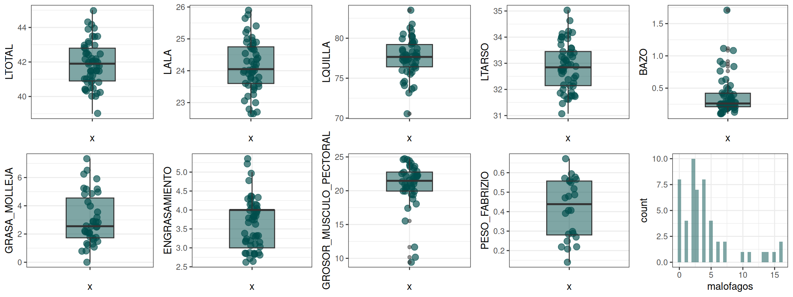
El objetivo es estimar la condición corporal de las palomas a partir de medidas biométricas. Para ello lo primero que debemos saber es qué otra medida estima mejor el peso y extraer un índice de condición corporal.
5.6.1. Correlación
Para ello lo primero que vamos a ver es cómo se correlacionan las distintas variables biométricas con el peso.
La correlación entre variables es simétrica y no tiene unidades: \(r_{XY}=r_{YX}\). El valor del coeficiente puede tomar valores entre \(-1\) y \(1\). El signo indica la dirección de la asociación, el valor absoluto indica la intensidad de la asociación. Valores próximos a cero indica ausencia de asociación lineal, pero no necesariamente ausencia de cualquier tipo de relación.
Una correlación no demuestra que una variable cause cambios en la otra.
Existen distintos métodos para medir la correlación:
Correlación de Pearson: mide asociación lineal para variables cuantitativas.
Correlación de Spearman: mide asociación mediante rangos para variables cuantitativas u ordinales, cuando la relación no es necesariamente lineal, o cuando se desea reducir la influencia de magnitudes extremas.
Correlación de Kendall: mide concordancia entre pares de observaciones y es especialmente útil con variables ordinales, muestras pequeñas o cuando existen muchos valores repetidos.
Se pueden utilizar varias funciones para calcular la correlación entre variables. Entre ellas la función cor() permite determinar cómo considerar los valores NA, ello se hace a través del argumento use, que pueden tomar los valores: "everything", "all.obs", "complete.obs", "pairwise.complete.obs". La función cor.test() devuelve además el contraste, el valor p, pero no tiene el argumento use para determinar qué hacer con los valores NA, pero elimina las parejas incompletas.
Para el ejemplo siguiente usaremos
cor().
Mostrar código
cor_matrix <- cor(palomas %>% select(peso:ltarso),
method = "pearson",
use = "complete.obs")
p_matrix <- corrplot::cor.mtest(palomas %>% select(peso:ltarso), conf.level = 0.95)$p
colores_texto <- ifelse(p_matrix > 0.05, "gray60", "black")
colores_recortados <- colores_texto[lower.tri(colores_texto, diag = FALSE)]
corrplot::corrplot(cor_matrix,
method = 'shade',
type = "lower",
diag = FALSE,
tl.col = "black",
tl.cex = 0.8,
tl.srt = 0,
tl.offset = 0.8,
# addCoef.col = "black",
cl.cex = 0.7,
cl.offset = 0.2,
cl.ratio = 0.30,
addCoef.col = colores_recortados # Aplica el contraste fuerte/claro a los números
)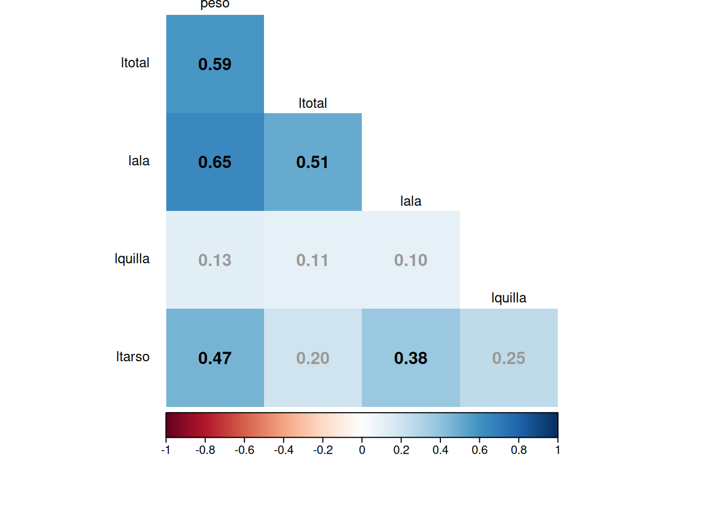
El texto negro representa las correlaciones significativas, mientras que el texto en gris representa las correlaciones que no son significativas.
En estos datos, vemos que la longitud del ala (lala) presenta la asociación lineal más intensa con el peso entre las variables examinadas. La utilizaremos como ejemplo didáctico de regresión lineal.
Usaremos la longitud del ala como variable explicativa (x) para conocer cómo cambia, en promedio, el peso como variable respuesta (y), esto es realizar una regresión lineal.
5.6.2. Regresión lineal
En una regresión lineal la relación entre una variable respuesta y una variable explicativa se modeliza mediante una ecuación que se podría escribir de la siguiente manera:
Variable respuesta = Intercepto + Coeficiente * Variable explicativa + Error
A la variable respuesta también se la llama variable dependiente y a la variable explicativa variable independiente o variable predictora.
El primer supuesto de una regresión lineal es que la relación entre la variable explicativa con la respuesta debe ser aproximadamente lineal.
Por lo tanto, antes de nada observaremos nuestros datos mediante un diagrama de dispersión o scatterplot. Este tipo de gráfico sirve para evaluar visualmente la linealidad, aunque no demuestra que el supuesto se cumpla.
Mostrar código
ggplot(palomas, aes(y = peso, x = lala)) +
geom_point(size = 3,
col = "#004E4C",
alpha = 0.2) +
labs(x = "Longitud del ala",
y = "Peso") +
theme_bw()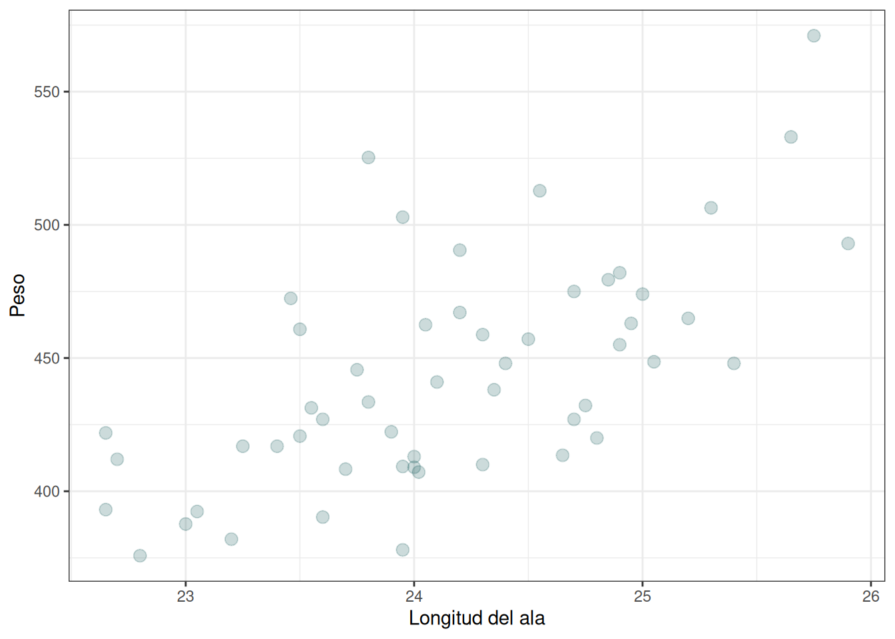
El gráfico muestra una relación aproximadamente lineal.
En una regresión lineal suponemos que la relación existente en la población puede expresarse mediante:
\(Y_i = \beta_0 + \beta_1X_i + \varepsilon_i\)
donde:
- \(Y_i\) es la variable respuesta de la observación \(i\);
- \(X_i\) es el valor de la variable explicativa;
- \(\beta_0\) es el intercepto poblacional;
- \(\beta_1\) es la pendiente poblacional;
- \(\varepsilon_i\) es el término de error aleatorio. Representa la diferencia entre el valor observado y el valor medio esperado en la población para un determinado valor de \(X_i\).
Los parámetros \(\beta_0\) y \(\beta_1\) son desconocidos.
A partir de los datos de nuestra muestra, la regresión estima sus valores: \(\widehat{y}_i = b_0 + b_1x_i\)
donde:
- \(b_0\) es la estimación de \(\beta_0\): el intercepto. En la recta estimada, representa el valor ajustado de la variable respuesta cuando la variable explicativa vale cero. El intercepto sólo tiene una interpretación biológica útil cuando x = 0 es posible y se encuentra razonablemente próximo al rango observado.
En el ejemplo que estamos construyendo x = 0 representa que la longitud del ala es 0, lo cual no tiene sentido biológico, por lo que aquí el intercepto sirve para construir la recta, pero no debe interpretarse biológicamente.
\(b_1\) es la estimación de \(\beta_1\): es el coeficiente de regresión o pendiente. Estima el cambio promedio que sufre la variable respuesta por cada unidad que aumenta la variable explicativa.
\(\widehat{y}_i\) es el valor ajustado por el modelo para la observación \(i\). Representa el valor medio de la variable respuesta que estima el modelo para las observaciones que tienen ese valor de \(x_i\).
Cuando \(x_i\) corresponde a una observación utilizada para ajustar el modelo, hablamos de valor ajustado. Cuando aplicamos la ecuación a una observación nueva, hablamos de valor predicho.
Mostrar código
ggplot(palomas, aes(x = lala, y = peso)) +
geom_point(
size = 3,
col = "#004E4C",
alpha = 0.2
) +
geom_smooth(
method = "lm",
col = "black",
fill = "#004E4C",
alpha = 0.4,
se = FALSE
) +
labs(
x = "Longitud del ala",
y = "Peso"
) +
theme_bw()+
annotate(
"text",
x = Inf,
y = Inf,
label = "hat(y)[i] == b[0] + b[1] * X[i]",
parse = TRUE,
hjust = 1.35,
vjust = 6,
size = 5
)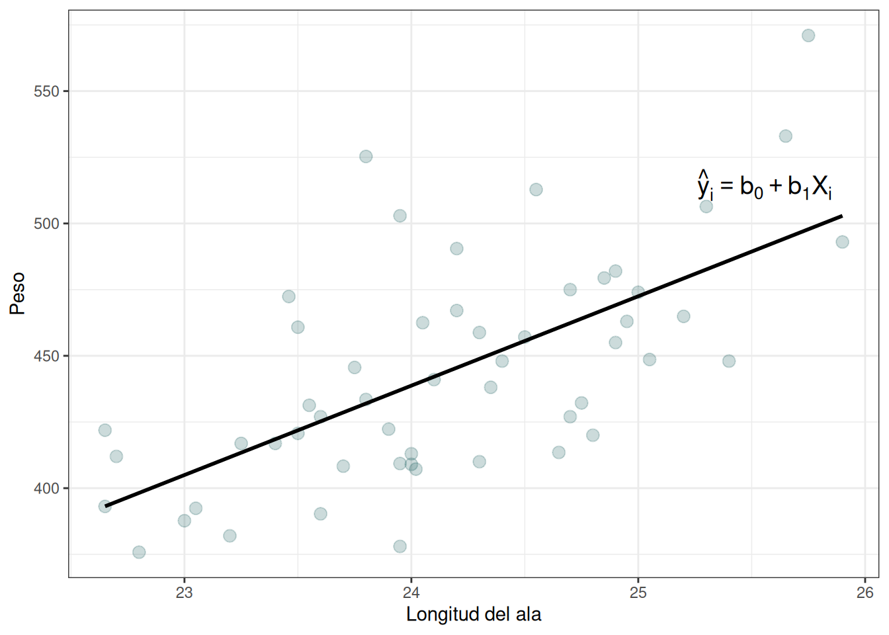
Un modelo lineal se puede construir usando la función lm(variable_respuesta ~ variable_explicativa, data = datos).
mod_peso_ala <- lm(peso ~ lala, data = palomas)
summary(mod_peso_ala)
##
## Call:
## lm(formula = peso ~ lala, data = palomas)
##
## Residuals:
## Min 1Q Median 3Q Max
## -59.047 -25.589 -1.153 15.306 93.317
##
## Coefficients:
## Estimate Std. Error t value Pr(>|t|)
## (Intercept) -371.629 134.901 -2.755 0.00812 **
## lala 33.765 5.582 6.049 1.72e-07 ***
## ---
## Signif. codes: 0 '***' 0.001 '**' 0.01 '*' 0.05 '.' 0.1 ' ' 1
##
## Residual standard error: 32.6 on 51 degrees of freedom
## Multiple R-squared: 0.4177, Adjusted R-squared: 0.4063
## F-statistic: 36.59 on 1 and 51 DF, p-value: 1.72e-07¿Aporta la variable explicativa información al modelo?
La tabla ANOVA de la regresión compara dos modelos:
un modelo sin la variable explicativa, que utiliza la media de la respuesta para todas las observaciones: \(Y_i=\beta_0+\varepsilon_i\)
el modelo que incluye la variable explicativa: \(Y_i=\beta_0+\beta_1X_i+\varepsilon_i\)
En una regresión lineal simple, esta comparación permite evaluar si incorporar la variable explicativa reduce suficientemente la variabilidad residual.
El estadístico utilizado es: \(F=\frac{MS_{\text{regresión}}}{MS_{\text{residuos}}}\)
Las hipótesis del contraste son: \(H_0:\beta_1=0\) frente a: \(H_1:\beta_1\neq0\)
La hipótesis nula indica que, dentro del modelo planteado, incluir la longitud del ala no mejora el ajuste respecto a utilizar únicamente el peso medio. La hipótesis alternativa indica que la pendiente del modelo es distinta de cero y que la longitud del ala aporta información para explicar las diferencias observadas en el peso.
La función anova() muestra la descomposición de la variabilidad y realiza este contraste global:
anova(mod_peso_ala)
## Analysis of Variance Table
##
## Response: peso
## Df Sum Sq Mean Sq F value Pr(>F)
## lala 1 38880 38880 36.588 1.72e-07 ***
## Residuals 51 54194 1063
## ---
## Signif. codes: 0 '***' 0.001 '**' 0.01 '*' 0.05 '.' 0.1 ' ' 1El contraste global de la regresión evidencia que incluir la longitud del ala mejora el ajuste respecto a un modelo que usa únicamente el peso medio (F=36.588, p<0.001).
En una regresión lineal simple con una única variable explicativa, el contraste ANOVA y el contraste de la pendiente que aparece en
summary()son equivalentes.
¿Cómo se relaciona la longitud del ala con el peso?
Por cada unidad adicional de longitud del ala, el peso medio estimado aumenta aproximadamente 33.765 unidades, dentro del rango observado.
Esta interpretación describe una asociación estadística y no implica necesariamente que una mayor longitud del ala cause un aumento del peso.
Los coeficientes \(b_0\) y \(b_1\) son estimaciones calculadas a partir de una muestra y, por tanto, están sujetos a incertidumbre muestral.
El intervalo de confianza (IC) proporciona un rango de valores plausibles para el parámetro poblacional correspondiente. En un intervalo de confianza del 95 %:
- si el intervalo de la pendiente no contiene el 0, se encuentra evidencia de que la pendiente poblacional del modelo lineal es distinta de cero,
- si contiene el 0, no se encuentra evidencia suficiente para afirmar que la pendiente poblacional sea distinta de 0.
confint(mod_peso_ala)
## 2.5 % 97.5 %
## (Intercept) -642.45387 -100.80347
## lala 22.55864 44.97172Teniendo en cuenta los resultados anteriores se podría predecir el peso de una paloma torcaz sabiendo la longitud de su ala mediante la siguiente ecuación:
\(\widehat{peso} = -371.629 + 33.765 \times \text{longitud del ala}\)
Para una nueva observación, R calcula el valor predicho mediante predict(modelo, newdata = valor_de_x). El cálculo es equivalente a sustituir el valor de la variable explicativa en la recta estimada:
new_ind <- tibble(lala = 25)
predict(mod_peso_ala,
newdata = new_ind
)
## 1
## 472.5008
coef(mod_peso_ala)[1] + coef(mod_peso_ala)[2] * new_ind$lala
## (Intercept)
## 472.5008¿Cómo evaluamos el ajuste y la adecuación del modelo?: Valores observados, valores ajustados y residuos
Para cada observación conocemos un valor real de la variable respuesta, \(y_i\). >En nuestro ejemplo, es el peso realmente medido para la paloma \(i\).
A partir de la longitud del ala, el modelo calcula un valor ajustado \(\widehat y_i = b_0+b_1x_i\). Este valor representa el peso medio que el modelo estima para las palomas con ese valor de longitud del ala.
Este valor ajustado no suele coincidir exactamente con el valor realmente observado \(y_i\) que se encuentra en nuestros datos. La diferencia entre ambos es el residuo: \(e_i = y_i - \widehat{y}_i\)
Gráficamente, el residuo es la distancia vertical entre la observación y la recta de regresión. Cuanto mayor sea \(|e_i|\), mayor es la diferencia entre el valor observado y el ajustado.
- Si \(e_i>0\), la observación se encuentra por encima de la recta: el modelo ha infraestimado su peso.
- Si \(e_i<0\), la observación se encuentra por debajo de la recta: el modelo ha sobreestimado su peso.
En una regresión lineal ajustada por mínimos cuadrados y con intercepto, la recta pasa por el punto formado por las medias de ambas variables: \((\bar x,\bar y)\) y la suma de los residuos es cero, \(\sum e_{i} = 0\). Esto no significa que el modelo no cometa errores, sino que los residuos positivos y negativos se compensan.
Mostrar código
punto1 <- palomas %>%
filter(!is.na(lala), !is.na(peso)) %>%
slice(50)
# Obtener el valor ajustado por la recta
punto1$ajustado <- predict(mod_peso_ala, newdata = punto1)
ggplot(palomas, aes(x = lala, y = peso)) +
geom_point(
size = 3,
col = "#004E4C",
alpha = 0.2
) +
geom_smooth(
method = "lm",
col = "black",
fill = "#004E4C",
alpha = 0.4,
se = FALSE
) +
# Valor ajustado: ŷ1
geom_point(
data = punto1,
aes(y = ajustado,
x = lala),
size = 4,
fill = "#7C4D87",
col = "#7C4D87",
alpha = 0.8,
inherit.aes = FALSE
) +
# Observación real
geom_point(
data = punto1,
aes(x = lala, y = peso),
size = 4,
shape = 21,
fill = "#004E4C",
alpha = 0.8,
inherit.aes = FALSE
) +
labs(
x = "Longitud del ala",
y = "Peso"
) +
theme_bw() +
annotate(
"text",
x = punto1$lala,
y = punto1$peso,
label = "y[i]",
parse = TRUE,
hjust = 1.5,
vjust = -0.3,
size = 5
) +
annotate(
"text",
x = punto1$lala,
y = punto1$ajustado,
label = "hat(y)[i]",
parse = TRUE,
hjust = 1.5,
vjust = -0.3,
size = 5
) +
annotate(
"text",
x = punto1$lala,
y = (punto1$ajustado + punto1$peso)/2,
label = "Residuo[i]",
parse = TRUE,
hjust = -0.3,
vjust = 0,
size = 5
) +
geom_segment(
data = punto1,
aes(
x = lala,
xend = lala,
y = ajustado,
yend = peso
),
linewidth = 0.5,
linetype = "dotted",
inherit.aes = FALSE,
col = "#7C4D87"
)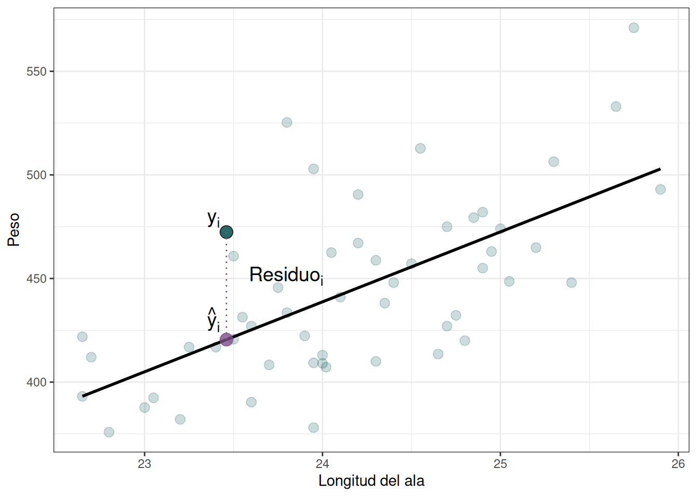
¿Qué ocurriría si no conociéramos la longitud del ala?
Las palomas no tienen todas el mismo peso. Sus pesos varían alrededor del peso medio observado, \(\bar y\). Si no utilizáramos ninguna variable explicativa, la predicción más sencilla para todas las palomas sería precisamente ese peso medio: \(\widehat y_i=\bar y\)
La regresión intenta mejorar esta predicción utilizando variables explicativas, como la longitud del ala. En lugar de asignar a todas las palomas el mismo valor \(\bar y\), calcula para cada una un valor ajustado \(\widehat y_i\).
Para una observación concreta i, la distancia entre su peso observado y el peso medio (desviación total) puede descomponerse en dos partes la parte explicada por el modelo y el residuo:
\(y_i-\bar y = (\widehat y_i-\bar y) + (y_i-\widehat y_i)\)
Para cuantificar estas diferencias en todo el conjunto de datos, las desviaciones se elevan al cuadrado y se suman.
Variabilidad total (SST): Mide cuánto se alejan los valores observados del valor medio, \(SST = \sum_{i=1}^{n} (y_i - \bar y)²\).
Variabilidad explicada por la regresión (SSR): Mide cuánto se alejan los valores ajustados por el modelo del valor medio, \(SSR=\sum_{i=1}^{n}(\widehat y_i-\bar y)^2\).
Variabilidad explicada significa variabilidad recogida por el modelo estadístico. No implica necesariamente que la variable explicativa sea la causa de los cambios observados en la respuesta.
- Variabilidad no explicada o residual (SSE): Mide cuánto se alejan los valores observados de los valores ajustados, \(SSE=\sum_{i=1}^{n}(y_i-\widehat y_i)^2\).
En un modelo lineal que incluye intercepto se cumple: SST = SSR + SSE
Mostrar código
# Media de y para las observaciones utilizadas por el modelo
datos_modelo <- model.frame(mod_peso_ala)
media_x <- mean(datos_modelo$lala, na.rm = TRUE)
media_y <- mean(datos_modelo$peso, na.rm = TRUE)
punto1$media_y <- media_y
library(ggpubr)
ggarrange(
ggplot(datos_modelo, aes(x = lala, y = peso)) +
geom_point(
size = 3,
col = "#004E4C",
alpha = 0.2
) +
geom_smooth(
method = "lm",
col = "black",
fill = "#004E4C",
alpha = 0.4,
se = FALSE
) +
# Valor ajustado: ŷ1
geom_point(
data = punto1,
aes(y = ajustado,
x = lala),
size = 4,
fill = "#7C4D87",
col = "#7C4D87",
alpha = 0.8,
inherit.aes = FALSE
) +
# Observación real
geom_point(
data = punto1,
aes(x = lala, y = peso),
size = 4,
shape = 21,
fill = "#004E4C",
alpha = 0.8,
inherit.aes = FALSE
) +
geom_hline(
yintercept = media_y,
linetype = "dotted",
linewidth = 0.8,
colour = "grey50"
) +
annotate(
"text",
x = media_x,
y = media_y,
label = "bar(y)",
parse = TRUE,
hjust = 0,
vjust = -0.5,
size = 5
) +
geom_point(
data = punto1,
aes(x = (media_y + 371.629) / 33.765,
y = media_y),
shape = 16,
size = 4,
inherit.aes = FALSE
) +
labs(
title = "Variabilidad total (SST)",
x = "Longitud del ala",
y = "Peso"
) +
theme_bw() +
annotate(
"text",
x = punto1$lala,
y = punto1$peso,
label = "y[i]",
parse = TRUE,
hjust = 1.5,
vjust = -0.3,
size = 5
) +
annotate(
"text",
x = punto1$lala,
y = punto1$ajustado,
label = "hat(y)[i]",
parse = TRUE,
hjust = 1.3,
vjust = 1.4,
size = 5
) +
# SST
geom_segment(
data = punto1,
aes(
x = lala,
xend = lala,
y = media_y,
yend = peso
),
linewidth = 1.5,
inherit.aes = FALSE,
col = "#004E4C",
alpha = 0.5
) +
annotate(
"text",
x = punto1$lala,
y = media_y,
label = "y[i] - bar(y)",
col = "#004E4C",
parse = TRUE,
hjust = 1.5,
vjust = -1.5,
size = 5
),
ggplot(datos_modelo, aes(x = lala, y = peso)) +
geom_point(
size = 3,
col = "#004E4C",
alpha = 0.2
) +
geom_smooth(
method = "lm",
col = "black",
fill = "#004E4C",
alpha = 0.4,
se = FALSE
) +
# Valor ajustado: ŷ1
geom_point(
data = punto1,
aes(y = ajustado,
x = lala),
size = 4,
fill = "#7C4D87",
col = "#7C4D87",
alpha = 0.8,
inherit.aes = FALSE
) +
# Observación real
geom_point(
data = punto1,
aes(x = lala, y = peso),
size = 4,
shape = 21,
fill = "#004E4C",
alpha = 0.8,
inherit.aes = FALSE
) +
geom_hline(
yintercept = media_y,
linetype = "dotted",
linewidth = 0.8,
colour = "grey50"
) +
annotate(
"text",
x = media_x,
y = media_y,
label = "bar(y)",
parse = TRUE,
hjust = 0,
vjust = -0.5,
size = 5
) +
geom_point(
data = punto1,
aes(x = (media_y + 371.629) / 33.765,
y = media_y),
shape = 16,
size = 4,
inherit.aes = FALSE
) +
labs(
title = "Variabilidad explicada por la regresión (SSR)",
x = "Longitud del ala",
y = "Peso"
) +
theme_bw() +
annotate(
"text",
x = punto1$lala,
y = punto1$peso,
label = "y[i]",
parse = TRUE,
hjust = 1.5,
vjust = -0.3,
size = 5
) +
annotate(
"text",
x = punto1$lala,
y = punto1$ajustado,
label = "hat(y)[i]",
parse = TRUE,
hjust = 1.5,
vjust = 0.7,
size = 5
) +
# SSR
geom_segment(
data = punto1,
aes(
x = lala,
xend = lala,
y = ajustado,
yend = media_y
),
linewidth = 1.5,
inherit.aes = FALSE,
col = "#004E4C",
alpha = 0.3
) +
annotate(
"text",
x = punto1$lala,
y = media_y,
label = "hat(y)[i] - bar(y)",
col = "#004E4C",
parse = TRUE,
hjust = 1.5,
vjust = 1.8,
size = 5
),
ggplot(datos_modelo, aes(x = lala, y = peso)) +
geom_point(
size = 3,
col = "#004E4C",
alpha = 0.2
) +
geom_smooth(
method = "lm",
col = "black",
fill = "#004E4C",
alpha = 0.4,
se = FALSE
) +
# Valor ajustado: ŷ1
geom_point(
data = punto1,
aes(y = ajustado,
x = lala),
size = 4,
fill = "#7C4D87",
col = "#7C4D87",
alpha = 0.8,
inherit.aes = FALSE
) +
# Observación real
geom_point(
data = punto1,
aes(x = lala, y = peso),
size = 4,
shape = 21,
fill = "#004E4C",
alpha = 0.8,
inherit.aes = FALSE
) +
geom_hline(
yintercept = media_y,
linetype = "dotted",
linewidth = 0.8,
colour = "grey50"
) +
annotate(
"text",
x = media_x,
y = media_y,
label = "bar(y)",
parse = TRUE,
hjust = 0,
vjust = -0.5,
size = 5
) +
geom_point(
data = punto1,
aes(x = (media_y + 371.629) / 33.765,
y = media_y),
shape = 16,
size = 4,
inherit.aes = FALSE
) +
labs(
title = "Variabilidad no explicada o residual (SSE)",
x = "Longitud del ala",
y = "Peso"
) +
theme_bw() +
annotate(
"text",
x = punto1$lala,
y = punto1$peso,
label = "y[i]",
parse = TRUE,
hjust = 1.5,
vjust = -0.3,
size = 5
) +
annotate(
"text",
x = punto1$lala,
y = punto1$ajustado,
label = "hat(y)[i]",
parse = TRUE,
hjust = 1.3,
vjust = 1.4,
size = 5
) +
# SSE
geom_segment(
data = punto1,
aes(
x = lala,
xend = lala,
y = ajustado,
yend = peso
),
linewidth = 1.5,
inherit.aes = FALSE,
col = "#004E4C",
alpha = 0.3
) +
annotate(
"text",
x = punto1$lala,
y = media_y,
label = "e[i] == y[i] - hat(y)[i]",
col = "#004E4C",
parse = TRUE,
hjust = 0.4,
vjust = -0.7,
size = 5
),
nrow = 1)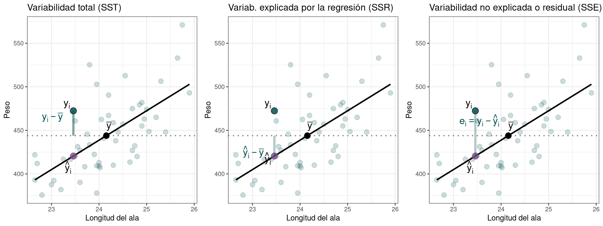
Cada panel representa la desviación correspondiente a una única observación. Cuando estas desviaciones se elevan al cuadrado y se suman para todas las observaciones, obtenemos SST, SSR y SSE.
Coeficiente de determinación
El coeficiente de determinación, \(R^2\), representa la proporción de la variabilidad total de la respuesta que es explicada por el modelo. \(R² = \frac{\text{Variabilidad Explicada}}{\text{Variabilidad Total}} = \frac {SSR}{SST} = 1 - \frac{SSE}{SST}\)
Su valor se encuentra entre 0 y 1.
- \(R^2=0\) indica que la recta no mejora la predicción basada únicamente en la media.
- \(R^2=1\) indica que todas las observaciones se encuentran exactamente sobre la recta.
- Un valor intermedio indica qué proporción de la variabilidad observada recoge el modelo.
Mostrar código
summary(mod_peso_ala)$r.squared[1] 0.4177306Un \(R^2=0.41\) significa que el modelo explica el 41 % de la variabilidad observada en el peso. El 59 % restante no es explicado por la longitud del ala en este modelo.
\(R^2\) describe el ajuste del modelo bajo la muestra utilizada, pero no garantiza que un modelo realice buenas predicciones en nuevas observaciones.
No existe un valor universal de \(R^2\) a partir del cual un modelo pueda considerarse bueno. Su interpretación depende del fenómeno estudiado y del objetivo del análisis.
En una regresión lineal con intercepto, el coeficiente de determinación es igual al cuadrado de la correlación de Pearson (r) entre la variable explicativa y la respuesta: \(R^2=r^2\).
Mostrar código
summary(mod_peso_ala)$r.squared[1] 0.4177306Mostrar código
cor(
datos_modelo$peso,
datos_modelo$lala,
method = "pearson"
)^2[1] 0.4177306¿Se cumplen los supuestos del modelo?
Para evaluarlo debemos utilizar los gráficos de diagnóstico, ya que permiten identificar patrones que podrían indicar problemas en el modelo:
par(mfrow = c(2, 2))
plot(mod_peso_ala)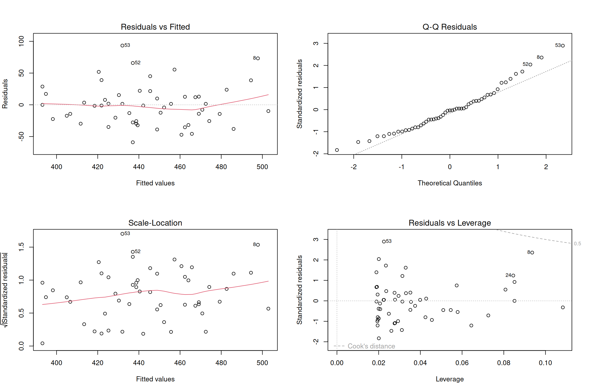
- Además de que deba existir linealidad entre la variable respuesta y la explicativa, existen otras asunciones en los modelos de regresión lineal (LM). La linealidad además de poderla observar entre la variable respuesta y explicativa, puede observarse en los residuos: no deben mostrar una curvatura sistemática. Para ello es muy útil utilizar el gráfico de Residuals vs Fitted, buscamos una nube sin curvaturas sistemáticas y con una dispersión aproximadamente constante.
El gráfico de residuos frente a valores ajustados no muestra una curvatura muy pronunciada.
- Homogeneidad de la varianza de los residuos: su dispersión debería ser aproximadamente constante y no formar un embudo. El gráfico Scale–Location: permite evaluar si la dispersión de los residuos es aproximadamente constante.
La dispersión de los residuos aumenta ligeramente con los valores ajustados. Esto sugiere una posible heterogeneidad moderada de varianzas.
- Normalidad aproximada de los residuos para la inferencia. El gráfico Q–Q debería mostrar un ajuste razonable a la línea, especialmente en la zona central. Las desviaciones pequeñas en las colas no implican necesariamente un problema grave.
La mayoría de los puntos de la zona central siguen razonablemente bien la recta. Sin embargo, algunas observaciones de la cola superior se separan claramente (52, 53 y 8).
- Ausencia de observaciones excesivamente influyentes: debemos comprobar que ninguna observación determine excesivamente la pendiente. Residuals vs Leverage: ayuda a detectar observaciones que podrían tener una influencia excesiva sobre la recta.
Algunas observaciones presentan un leverage o unos residuos relativamente elevados. No parece que una única observación determine completamente el ajuste, pero estos casos deberían revisarse.
- Las observaciones deben ser independientes: depende principalmente del diseño del muestreo.
Incertidumbre al estimar y predecir
Anteriormente hemos utilizado la recta de regresión para obtener una predicción puntual del peso a partir de un determinado valor de longitud del ala.
Para una paloma cuya longitud del ala es 25, el modelo proporciona un único valor estimado: \(\widehat y=b_0+b_1x\)
Sin embargo, esa predicción es solamente una estimación puntual y no será exacta para todas las palomas.
Aunque dos palomas tengan la misma longitud del ala, pueden presentar pesos diferentes debido a otras características individuales que el modelo no incluye.
Por ello, para una nueva observación podemos calcular un intervalo de predicción, que proporciona un rango de valores plausibles para su peso a partir de la longitud del ala.
Intervalo de predicción para una nueva observación
El intervalo de predicción proporciona un rango plausible para el peso de una nueva paloma individual cuya longitud del ala es 25.
Responde a la pregunta: ¿entre qué valores podría encontrarse el peso de una nueva paloma concreta cuya longitud del ala es 25?
nueva_paloma <- tibble(lala = 25)
predict(
mod_peso_ala,
newdata = nueva_paloma,
interval = "prediction",
level = 0.95
)
## fit lwr upr
## 1 472.5008 405.7654 539.2363El valor fit representa la mejor predicción puntual del modelo, mientras que el intervalo comprendido entre lwr y upr refleja la incertidumbre existente al predecir el peso de una nueva paloma individual.
Extrapolación
Las predicciones deben realizarse dentro del rango de valores de la variable explicativa observado en los datos.
Predecir para valores situados fuera de ese rango se denomina extrapolación. Aunque R puede calcular numéricamente la predicción, no sabemos si la relación observada dentro del rango de los datos continúa siendo válida fuera de él, por lo que esas predicciones pueden resultar poco fiables.
TipSabiendo todo esto… ¿por qué extraer un índice de condición corporal?
El peso corporal depende parcialmente del tamaño estructural del individuo. Por ello, comparar directamente los pesos puede resultar engañoso: una paloma de mayor tamaño tenderá a pesar más aunque no presente necesariamente una mejor condición corporal.
El modelo de regresión estima el peso esperado para cada valor de la medida biométrica y los residuos representan la diferencia entre el peso observado y el peso esperado.
Un residuo positivo indica que la paloma pesa más de lo esperado para su tamaño, mientras que un residuo negativo indica que pesa menos. Por este motivo, los residuos pueden utilizarse como un índice relativo de condición corporal ajustado por tamaño.
Este índice no mide directamente las reservas de grasa ni la salud del individuo. Recoge cualquier diferencia de peso que no haya sido explicada por la medida biométrica incluida en el modelo.
palomas <- palomas %>% mutate(icc = residuals(mod_peso_ala))A partir de este índice de condición corporal podríamos plantearnos otras preguntas, por ejemplo:
- ¿existen diferencias entre machos y hembras?
- ¿existen diferencias entre jóvenes y adultos?
- ¿y entre localidades?
- ¿existe interacción entre el sexo y la edad?
Lo primero que haremos será conocer mejor la variable indíce relativo de condición corporal (icc) que hemos creado:
Mostrar código
ggarrange(
ggplot(palomas |> drop_na(sexo), aes(x = icc, fill = sexo)) +
geom_density(alpha = 0.7) +
scale_fill_manual(values = c("#004E4C","#7C4D87"))+
theme_bw(),
ggplot(palomas |> drop_na(edad), aes(x = icc, fill = edad)) +
geom_density(alpha = 0.7) +
scale_fill_manual(values = c("#004E4C","#7C4D87"))+
theme_bw(),
ggplot(palomas |> drop_na(localidad), aes(x = icc, fill = localidad)) +
geom_density(alpha = 0.7) +
scale_fill_manual(values = c("#004E4C","#7C4D87"))+
theme_bw(),
ncol = 3
)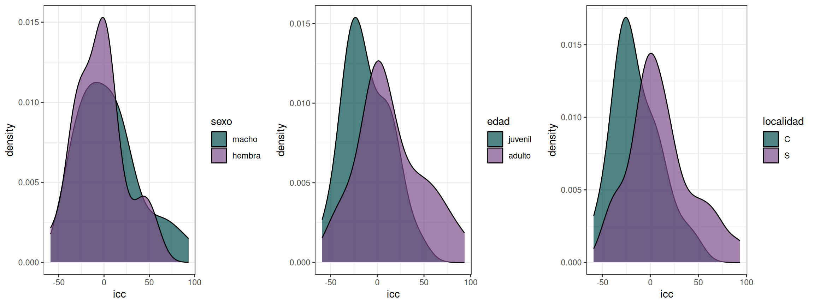
resultado_t_sexo <- t.test(
icc ~ sexo,
data = palomas,
var.equal = FALSE,
conf.level = 0.95
)
resultado_t_sexo
##
## Welch Two Sample t-test
##
## data: icc by sexo
## t = 1.1383, df = 49.996, p-value = 0.2604
## alternative hypothesis: true difference in means between group macho and group hembra is not equal to 0
## 95 percent confidence interval:
## -7.545024 27.283323
## sample estimates:
## mean in group macho mean in group hembra
## 5.244966 -4.624184Con los resultados obtenidos no podemos decir que haya diferencias entre ambos sexos.
Mostrar código
palomas %>%
drop_na(sexo) %>%
ggplot(aes(x = sexo, y = icc)) +
geom_boxplot(
width = 0.45,
alpha = 0.5,
outlier.shape = 5
) +
geom_jitter(
width = 0.08,
alpha = 0.65
) +
stat_summary(
fun = mean,
geom = "point",
shape = 21,
col = "#004E4C",
size = 5,
fill = "white",
alpha = 0.8
) +
labs(
x = "Sexo",
y = "ICC",
title = "Distribución de ICC según el sexo"
) +
theme_bw()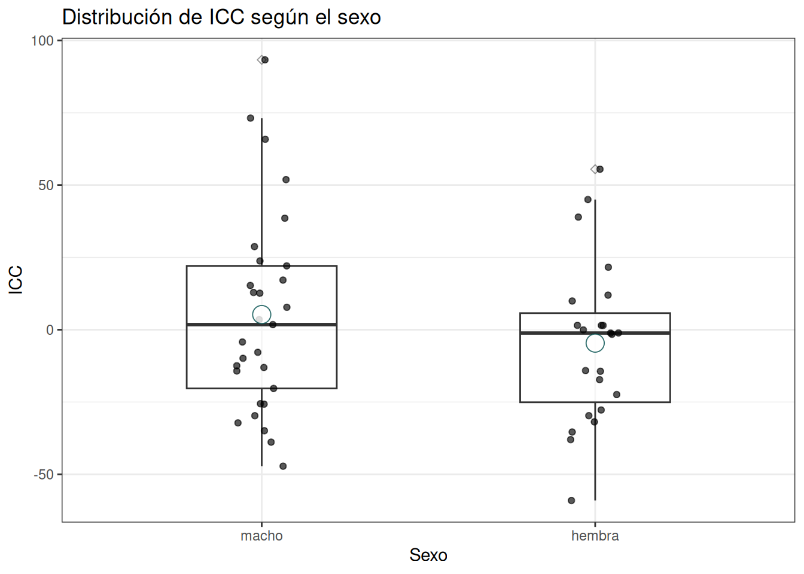
resultado_t_edad <- t.test(
icc ~ edad,
data = palomas,
var.equal = FALSE,
conf.level = 0.95
)
resultado_t_edad
##
## Welch Two Sample t-test
##
## data: icc by edad
## t = -2.92, df = 40.224, p-value = 0.005712
## alternative hypothesis: true difference in means between group juvenil and group adulto is not equal to 0
## 95 percent confidence interval:
## -42.531108 -7.740979
## sample estimates:
## mean in group juvenil mean in group adulto
## -11.10633 14.02971Sin embargo, los resultados apuntan a que existen diferencias en el icc debidas a la edad.
Mostrar código
palomas %>%
drop_na(edad) %>%
ggplot(aes(x = edad, y = icc)) +
geom_boxplot(
width = 0.45,
alpha = 0.5,
outlier.shape = 5
) +
geom_jitter(
width = 0.08,
alpha = 0.65
) +
stat_summary(
fun = mean,
geom = "point",
shape = 21,
col = "#004E4C",
size = 5,
fill = "white",
alpha = 0.8
) +
labs(
x = "Edad",
y = "ICC",
title = "Distribución de ICC según la edad"
) +
theme_bw()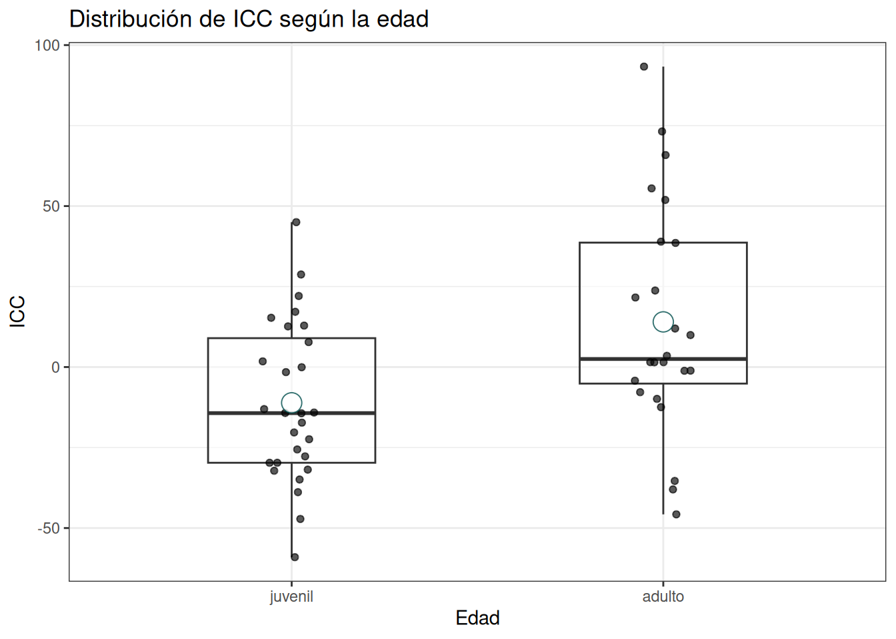
resultado_t_local <- t.test(
icc ~ localidad,
data = palomas,
var.equal = FALSE,
conf.level = 0.95
)
resultado_t_local
##
## Welch Two Sample t-test
##
## data: icc by localidad
## t = -3.2096, df = 50.966, p-value = 0.002301
## alternative hypothesis: true difference in means between group C and group S is not equal to 0
## 95 percent confidence interval:
## -41.615464 -9.587762
## sample estimates:
## mean in group C mean in group S
## -14.49148 11.11013Los resultados también señalan la existencia de diferencias en el icc debidas a la localidad.
Mostrar código
palomas %>%
drop_na(localidad) %>%
ggplot(aes(x = localidad, y = icc)) +
geom_boxplot(
width = 0.45,
alpha = 0.5,
outlier.shape = 5
) +
geom_jitter(
width = 0.08,
alpha = 0.65
) +
stat_summary(
fun = mean,
geom = "point",
shape = 21,
col = "#004E4C",
size = 5,
fill = "white",
alpha = 0.8
) +
labs(
x = "Localidad",
y = "ICC",
title = "Distribución de ICC según la localidad"
) +
theme_bw()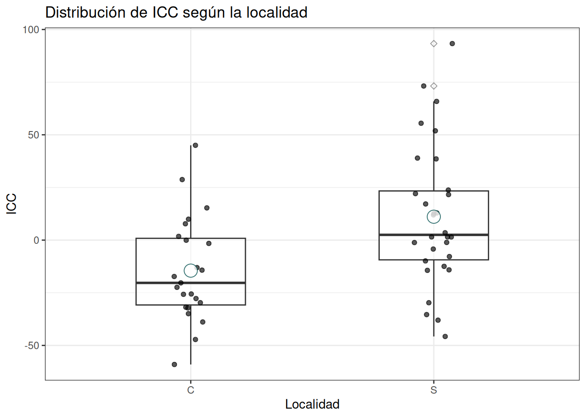
¿Sería posible que una interacción entre el sexo y la edad estuviera enmascarando una posible diferencia entre los sexos cuando hacemos la comparación?
palomas %>%
drop_na(sexo) %>%
drop_na(edad) %>%
group_by(edad, sexo) %>%
summarise(
n = n(),
media = mean(icc),
desviacion_tipica = sd(icc),
mediana = median(icc),
rango_intercuartilico = IQR(icc),
.groups = "drop"
)
## # A tibble: 4 × 7
## edad sexo n media desviacion_tipica mediana rango_intercuartilico
## <fct> <fct> <int> <dbl> <dbl> <dbl> <dbl>
## 1 juvenil macho 17 -8.11 24.3 -13.1 42.6
## 2 juvenil hembra 11 -15.7 25.8 -17.3 20.9
## 3 adulto macho 11 28.7 38.0 23.8 64.9
## 4 adulto hembra 12 5.57 26.4 1.51 15.5Visualización gráfica
Mostrar código
palomas %>%
drop_na(sexo) %>%
drop_na(edad) %>%
ggplot(aes(x = edad, y = icc)) +
geom_boxplot(
aes(fill = sexo),
width = 0.6,
alpha = 0.5,
outlier.shape = 5,
position = position_dodge(width = 0.75)
) +
geom_point(
aes(colour = sexo),
position = position_jitterdodge(
jitter.width = 0.08,
jitter.height = 0,
dodge.width = 0.75
),
alpha = 0.65,
size = 1.7
) +
stat_summary(
aes(group = sexo, colour = sexo),
fun = mean,
geom = "point",
position = position_dodge(width = 0.75),
shape = 21,
size = 3,
fill = "white",
stroke = 1
) +
scale_fill_manual(
values = c(
"macho" = "#004E4C",
"hembra" = "#7C4D87"
),
name = "Sexo"
) +
scale_colour_manual(
values = c(
"macho" = "#004E4C",
"hembra" = "#7C4D87"
),
name = "Sexo"
) +
labs(
x = "Edad",
y = "Medida de icc",
title = "Distribución de icc según la edad y el sexo"
) +
theme_bw()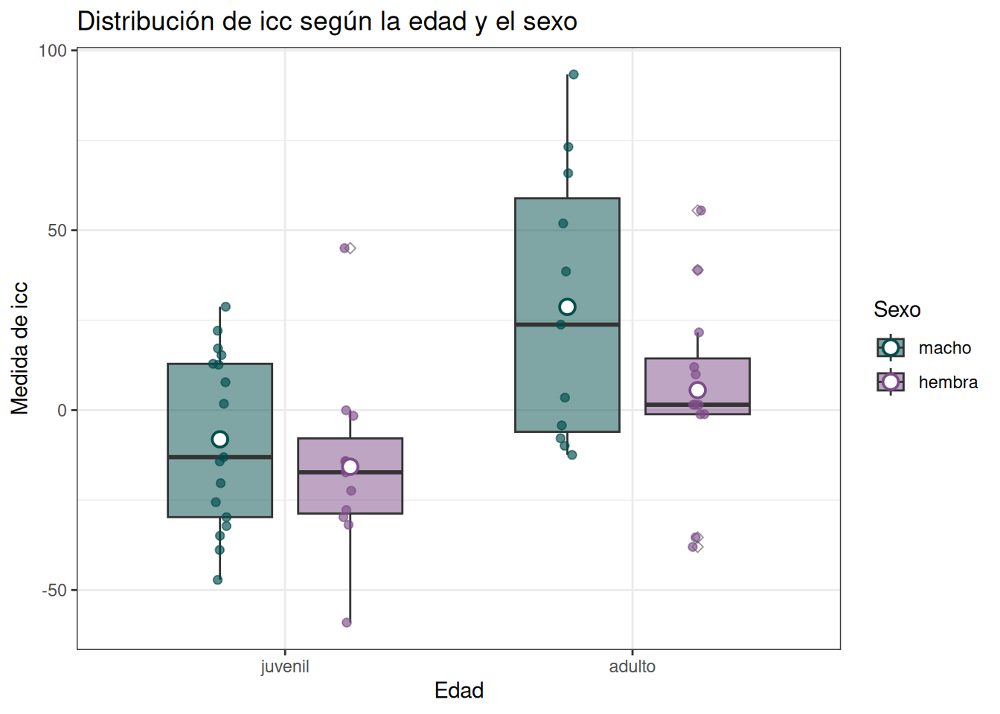
mod_palomas_edad_sexo <- aov(icc ~ edad * sexo,
data = palomas, na.action = na.omit)
summary(mod_palomas_edad_sexo)
## Df Sum Sq Mean Sq F value Pr(>F)
## edad 1 9713 9713 11.962 0.00116 **
## sexo 1 2718 2718 3.348 0.07364 .
## edad:sexo 1 741 741 0.912 0.34435
## Residuals 47 38166 812
## ---
## Signif. codes: 0 '***' 0.001 '**' 0.01 '*' 0.05 '.' 0.1 ' ' 1
## 2 observations deleted due to missingnessEl resultado de la prueba estadística señala que no detecta diferencias significativas debidas a la interacción entre sexo y edad, mientras que si detecta diferencias debidas a la edad y marginalmente significativas debidas al sexo.
Otras preguntas podrían ser:
- ¿el peso del bazo podría influir en el icc?
- ¿la grasa de la molleja podría influir en el icc?
- ¿el grosor del músculo pectoral podría influir en el icc?
- ¿el peso de la bolsa de Fabricio podría influir en el icc?
En este análisis exploratorio evaluamos si el ICC residual presenta una asociación lineal con cada una de las variables consideradas.Visualicemos primero cómo serían estas relaciones que planteamos:
Mostrar código
ggarrange(
ggplot(palomas, aes(y = icc, x = bazo)) +
geom_point(size = 3,
col = "#004E4C",
alpha = 0.2) +
theme_bw() +
ggtitle("bazo"),
ggplot(palomas, aes(y = icc, x = grasa_molleja)) +
geom_point(size = 3,
col = "#004E4C",
alpha = 0.2) +
theme_bw()+
ggtitle("grasa_molleja"),
ggplot(palomas, aes(y = icc, x = grosor_musculo_pectoral)) +
geom_point(size = 3,
col = "#004E4C",
alpha = 0.2) +
theme_bw()+
ggtitle("grosor_musculo_pectoral"),
ggplot(palomas, aes(y = icc, x = peso_fabrizio)) +
geom_point(size = 3,
col = "#004E4C",
alpha = 0.2) +
theme_bw()+
ggtitle("peso_fabrizio"),
nrow = 2, ncol = 2)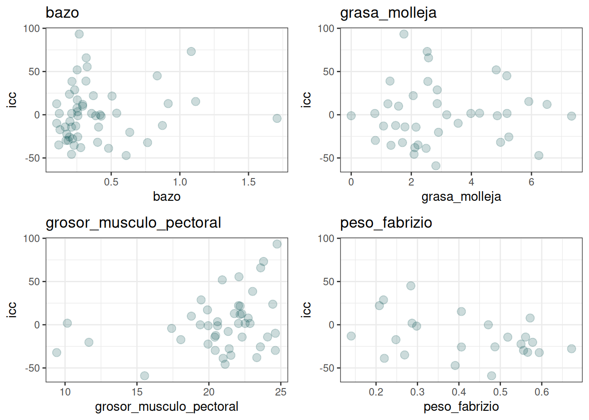
Con estos gráficos podríamos decir no se aprecia una tendencia clara entre la grasa de la molleja y el ICC, pero ¿y el resto de variables?
Vemos que es posible que haya una relación con el resto de variables, pero estas variables presentan una distribución acumulada que puede dificultar establecer una relación lineal con nuestra variable icc:
Mostrar código
ggarrange(
ggplot(palomas |> drop_na(bazo), aes(x = bazo)) +
geom_density(alpha = 0.7, fill = "#4FA89B") +
theme_bw(),
ggplot(palomas |> drop_na(grosor_musculo_pectoral),
aes(x = grosor_musculo_pectoral)) +
geom_density(alpha = 0.7, fill = "#FAEE62") +
theme_bw(),
ggplot(palomas |> drop_na(peso_fabrizio), aes(x = peso_fabrizio)) +
geom_density(alpha = 0.7, fill = "#004E4C") +
theme_bw(),
ncol = 3
)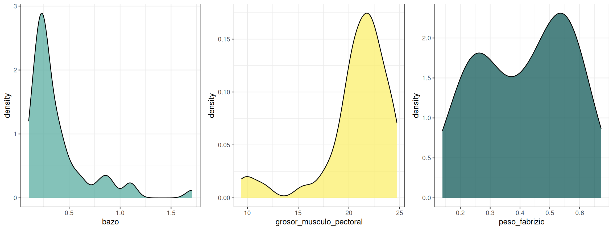
Algo que podemos hacer para tratar de facilitar la asociación lineal con nuestra variable respueta es transformar las variables, pero…. ¿qué transformación de todas?
Vemos que las variables bazo y grosor del músculo pectoral su distribución se encuentra muy sesgada hacia la derecha y a la izquierda, respectivamente. Podemos comprobar este sesgo visual usando la función skewness del paquete datawizard. Cuanto más cercano a 0 esté el valor de skewness menos sesgo tiene la variable.
datawizard::skewness(palomas$bazo)
## Skewness | SE
## ----------------
## 2.286 | 0.321
datawizard::skewness(palomas$grosor_musculo_pectoral)
## Skewness | SE
## ----------------
## -1.906 | 0.345Mostrar código
palomas <- palomas |> mutate(bazo_log = log(bazo),
gros_musc_pect_cuat = grosor_musculo_pectoral^4)
datawizard::skewness(palomas$bazo_log)
## Skewness | SE
## ----------------
## 0.622 | 0.321
datawizard::skewness(palomas$gros_musc_pect_cuat)
## Skewness | SE
## ----------------
## -0.320 | 0.345
ggarrange(
ggplot(palomas |> drop_na(bazo), aes(x = bazo_log)) +
geom_density(alpha = 0.7, fill = "#4FA89B") +
theme_bw(),
ggplot(palomas |> drop_na(grosor_musculo_pectoral),
aes(x = gros_musc_pect_cuat)) +
geom_density(alpha = 0.7, fill = "#FAEE62") +
theme_bw(),
ncol = 2
)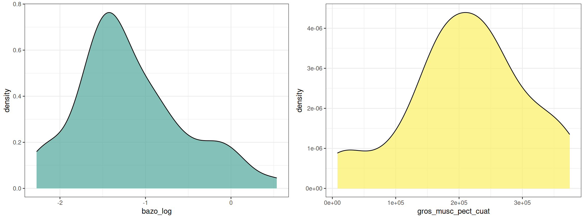
Vemos otra vez cómo se relacionan las variables transformadas con el índice relativo de condición corporal:
Mostrar código
ggarrange(
ggplot(palomas, aes(y = icc, x = bazo_log)) +
geom_point(size = 3,
col = "#004E4C",
alpha = 0.2) +
theme_bw() +
ggtitle("bazo"),
ggplot(palomas, aes(y = icc, x = gros_musc_pect_cuat)) +
geom_point(size = 3,
col = "#004E4C",
alpha = 0.2) +
theme_bw()+
ggtitle("grosor_musculo_pectoral"),
ggplot(palomas, aes(y = icc, x = peso_fabrizio)) +
geom_point(size = 3,
col = "#004E4C",
alpha = 0.2) +
theme_bw()+
ggtitle("peso_fabrizio"),
ncol = 3)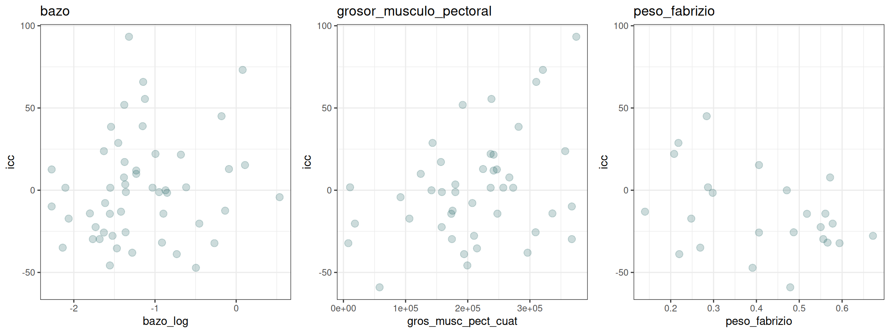
Con la transformación realizada parece que las variables explicativas podrían tener un comportamiento más lineal respecto a la variable respuesta. Por lo que podremos plantear un modelo lineal con cada una de estas variables:
mod_bazo <- lm(icc ~ bazo_log, data = palomas)
anova(mod_bazo)
## Analysis of Variance Table
##
## Response: icc
## Df Sum Sq Mean Sq F value Pr(>F)
## bazo_log 1 1401 1401.23 1.4229 0.2386
## Residuals 50 49239 984.78
mod_pect <- lm(icc ~ gros_musc_pect_cuat, data = palomas)
anova(mod_pect)
## Analysis of Variance Table
##
## Response: icc
## Df Sum Sq Mean Sq F value Pr(>F)
## gros_musc_pect_cuat 1 5994 5993.9 6.4455 0.01492 *
## Residuals 42 39057 929.9
## ---
## Signif. codes: 0 '***' 0.001 '**' 0.01 '*' 0.05 '.' 0.1 ' ' 1
mod_fabr <- lm(icc ~ peso_fabrizio, data = palomas)
anova(mod_fabr)
## Analysis of Variance Table
##
## Response: icc
## Df Sum Sq Mean Sq F value Pr(>F)
## peso_fabrizio 1 1840.2 1840.17 3.2731 0.08411 .
## Residuals 22 12368.8 562.22
## ---
## Signif. codes: 0 '***' 0.001 '**' 0.01 '*' 0.05 '.' 0.1 ' ' 1El contraste global de la regresión aportó que no hay evidencia suficiente de que incluir el bazo ni que incluir el peso de la bolsa de Fabricio aporte información adicional respecto a un modelo que asigna a todos los individuos el icc medio (F = 1.42, p.valor = 0.23 y F = 3.27, p.valor = 0.08, respectivamente), mientras que si existe evidencia de que incluir el grosor del músculo pectoral aporte información adicional al modelo (F = 6.45, p.valor = 0.01).
summary(mod_pect)
##
## Call:
## lm(formula = icc ~ gros_musc_pect_cuat, data = palomas)
##
## Residuals:
## Min 1Q Median 3Q Max
## -50.783 -21.646 0.536 16.816 71.353
##
## Coefficients:
## Estimate Std. Error t value Pr(>|t|)
## (Intercept) -2.563e+01 1.154e+01 -2.220 0.0319 *
## gros_musc_pect_cuat 1.270e-04 5.004e-05 2.539 0.0149 *
## ---
## Signif. codes: 0 '***' 0.001 '**' 0.01 '*' 0.05 '.' 0.1 ' ' 1
##
## Residual standard error: 30.49 on 42 degrees of freedom
## (9 observations deleted due to missingness)
## Multiple R-squared: 0.133, Adjusted R-squared: 0.1124
## F-statistic: 6.446 on 1 and 42 DF, p-value: 0.01492
confint(mod_pect)
## 2.5 % 97.5 %
## (Intercept) -4.891917e+01 -2.3336814311
## gros_musc_pect_cuat 2.605576e-05 0.0002280144
summary(mod_pect)$r.squared
## [1] 0.1330473Observando los resultados del modelo que aporta información adicional vemos que en la muestra analizada, el grosor del músculo pectoral fue la única de las variables estudiadas que presentó evidencia suficiente de una asociación positiva con la condición corporal relativa.
Este resultado describe una asociación y no demuestra una relación causal.
Mostrar código
ggplot(palomas, aes(y = icc, x = gros_musc_pect_cuat)) +
geom_point(
size = 3,
colour = "#004E4C",
alpha = 0.3
) +
geom_smooth(method = "lm",
col = "black",
se = FALSE) +
theme_bw()
A nivel biológico, existe una relación directa y estadísticamente significativa entre el músculo y la condición de las aves. Específicamente, por cada unidad que aumenta el grosor del músculo pectoral (en su escala transformada a la cuarta), el índice corporal se incrementa en 1.27^{-4} unidades de su propia escala. Este resultado señala que las palomas con mayor masa pectoral presentan, de manera consistente, un índice corporal superior.
summary(mod_pect)$r.squared
## [1] 0.1330473El modelo recoge aproximadamente el 13 % de la variabilidad observada en el índice. El porcentaje restante no queda recogido por esta variable y puede deberse a otras características individuales, errores de medición, variabilidad biológica o variables no incluidas en el modelo.
par(mfrow = c(2, 2))
plot(mod_pect)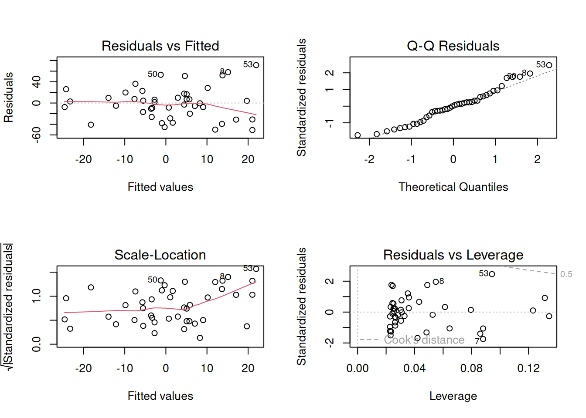
Los gráficos de diagnóstico muestran que la relación lineal no presenta una curvatura muy pronunciada (gráfico residuals vs. fitted), pero los gráficos muestran heterogeneidad de varianzas (gráfico Scale–Location), desviaciones de la normalidad en la cola superior (gráfico Q-Q) y algunas observaciones potencialmente influyentes (gráfico de residuos vs. Leverage). Por ello, la asociación estimada entre el grosor del músculo pectoral y el ICC debe considerarse exploratoria y los resultados inferenciales deben interpretarse con cautela.
¿Podría tener influencia la cantidad de parásitos que tienen las aves?
Veamos, como hemos hecho siempre, cómo es esta variable y cómo sería la posible relación entre estas variables.
ggarrange(
ggplot(palomas %>% drop_na(malofagos), aes(y = icc, x = malofagos)) +
geom_point(
size = 3,
colour = "#004E4C",
alpha = 0.3
) +
theme_bw(),
ggplot(palomas %>% drop_na(malofagos), aes(x = malofagos)) +
geom_density(alpha = 0.7, fill = "#4FA89B") +
theme_bw(),
ncol = 2)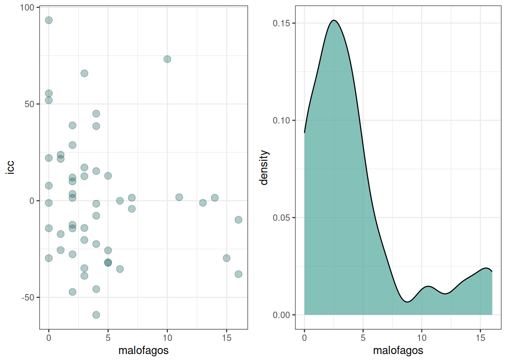
datawizard::skewness(palomas$malofagos)
## Skewness | SE
## ----------------
## 1.589 | 0.321
table(palomas$malofagos)
##
## 0 1 2 3 4 5 6 7 10 11 13 14 15 16
## 8 4 10 7 8 4 2 2 1 1 1 1 1 2Observamos que la mvariable se concentra mayoritariamente en un rango de valores, que quizás estén dificultando una posible relación lineal con la variable respuesta. Quizás una transformación de la variable explicativa se asocie mejor con la variable respuesta.
Hemos hecho una tabla para saber cuántas veces se ha registrado cada uno de los valores. ¿Ves en esa tabla algo que creas que te podría dar problema en alguna transformación?
Pista
log(0).
Mostrar código
palomas <- palomas |> mutate(malofagos_log = sqrt(malofagos + 0.1),
malofagos_sqrt = sqrt(malofagos))
ggarrange(ggplot(palomas %>% drop_na(malofagos), aes(x = malofagos_log)) +
geom_density(alpha = 0.7, fill = "#4FA89B") +
theme_bw(),
ggplot(palomas %>% drop_na(malofagos), aes(x = malofagos_sqrt)) +
geom_density(alpha = 0.7, fill = "#4FA89B") +
theme_bw(),
ncol = 2, nrow = 2
)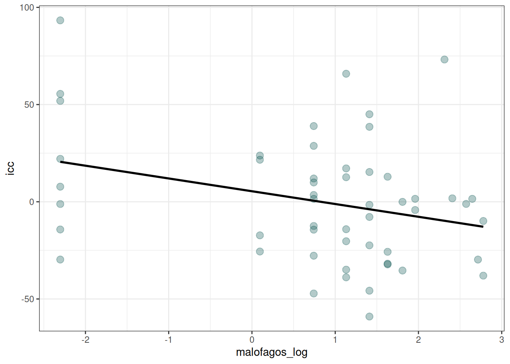
Hemos probado dos transformaciones que normalmente solucionan el sesgo de cola a la derecha, pero observamos que la distribución sigue no siendo adecuada. Hagamos una última prueba:
Mostrar código
palomas_malof <- palomas %>% drop_na(malofagos) %>%
filter(malofagos > 0) %>%
mutate(malofagos_log = log(malofagos + 0.1),
malofagos_sqrt = sqrt(malofagos))
ggarrange(ggplot(palomas_malof, aes(x = malofagos_log)) +
geom_density(alpha = 0.7, fill = "#4FA89B") +
theme_bw(),
ggplot(palomas_malof, aes(x = malofagos_sqrt)) +
geom_density(alpha = 0.7, fill = "#4FA89B") +
theme_bw(),
ncol = 3
)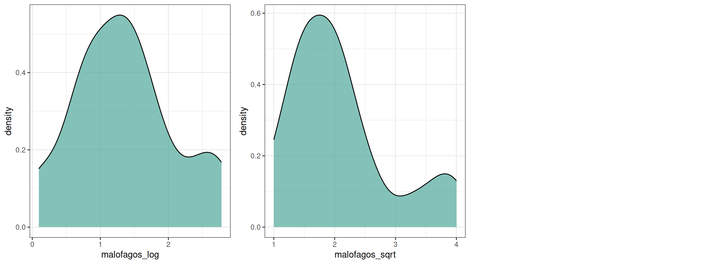
Con esta prueba vemos que quizás la transformación log es la que hace que la variable respuesta tenga una forma que vaya a ser más fácil explicar por un modelo lineal.
mod_malof <- lm(icc ~ malofagos_log, data = palomas_malof)
anova(mod_malof)
## Analysis of Variance Table
##
## Response: icc
## Df Sum Sq Mean Sq F value Pr(>F)
## malofagos_log 1 240 240.39 0.2729 0.6041
## Residuals 42 36991 880.74El contraste global de la regresión aportó que no hay evidencia suficiente de que incluir los parásitos aporte información adicional respecto a un modelo que asigna a todos los individuos el icc medio (F = 0.273 p.valor =r round(anova(mod_malof)[1,5], 3).
Mostrar código
ggplot(palomas_malof, aes(y = icc, x = malofagos_log)) +
geom_point(
size = 3,
colour = "#004E4C",
alpha = 0.3
) +
geom_smooth(method = "lm",
col = "black",
se = FALSE) +
theme_bw()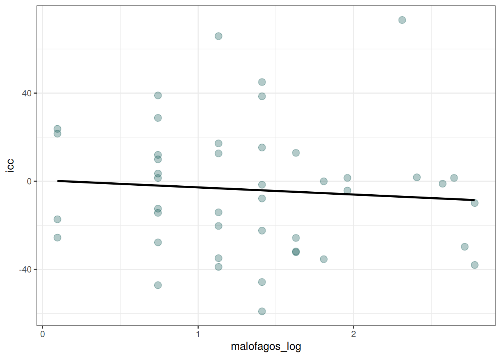
Si hubiéramos realizado un scatterplot entre ambas variables de manera inicial podríamos haber intuido que los parásitos no iban a aportar información adicional sobre el índice relativo de condición corporal.
NotaPara terminar: más allá de este ejemplo
En este ejemplo didáctico hemos calculado el índice de condición corporal (ICC) a través de la longitud del ala como medida de tamaño estructural.
Cuando se desea construir un índice residual a partir de una única medida morfométrica, puede compararse la capacidad de distintas medidas (e.g. la longitud del ala, la longitud del tarso, la longitud total) para recoger la variabilidad observada en el peso.
En una regresión lineal simple con intercepto, la medida con mayor correlación absoluta con el peso también presentará el mayor \(R^2\), siempre que los modelos se hayan calculado utilizando las mismas observaciones.
Existen otras posibilidades para calcular el ICC.
Una opción consiste en resumir varias medidas morfométricas (e.g. tamaño del tarso, el ala, total) a una única variable común que represente el tamaño corporal. Para ello pueden utilizarse técnicas de reducción de la dimensionalidad, como el análisis de componentes principales (PCA) o el escalamiento multidimensional no métrico (NMDS).
Otra opción es incluir varias medidas morfométricas conjuntamente en una regresión lineal múltiple: \(\text{peso} \sim \text{ala}+\text{tarso}+\text{pluma}\). Los residuos de este modelo podrían utilizarse como un índice relativo del peso que no queda recogido por las medidas de tamaño incluidas.
Estas aproximaciones requieren comprobaciones e interpretaciones adicionales y no se desarrollarán en esta asignatura de estadística básica.
Tip¿Qué otras variables podrían estar asociadas con el ICC?
Hasta ahora hemos estudiado la relación entre una variable respuesta y una única variable explicativa. Sin embargo, los sistemas biológicos rara vez dependen de una única característica.
Además del grosor del músculo pectoral, la variabilidad del índice de condición corporal podría estar relacionada con otras características como la localidad, el sexo o la edad, así como otras características individuales o ambientales que ni siquiera hayan sido medidas.
De hecho hemos visto que existen diferencias entre la localidad y la edad.
Entonces, ¿qué hacemos si queremos considerar varias variables al mismo tiempo?
Podemos ampliar el modelo lineal que ya conocemos e incluir simultáneamente varias variables. Este tipo de modelo se llama regresión lineal múltiple. La diferencia fundamental es que ahora incluimos más de una variable explicativa:
Variable respuesta = Intercepto + Coeficiente * Variable explicativa1 + Coeficiente * Variable explicativa2 + Coeficiente * Variable explicativa3 + ... + Error
\(Y_i = \beta_0 + \beta_1 \times X_{1i} + \beta_2 \times X_{2i} + \beta_3 \times X_{3i} + \varepsilon_i\)
donde:
- \(Y_i\) es la variable respuesta de la observación \(i\);
- \(X_{1i}, X_{2i}, X_{3i}, X_{pi}\) son los valores de las distintas variables explicativas;
- \(\beta_0\) es el intercepto poblacional;
- \(\beta_1, \beta_2, \beta_3\) son los coeficientes de la pendiente asociados a cada variable;
- \(\varepsilon_i\) es el término de error aleatorio. Representa la diferencia entre el valor observado y el valor medio esperado en la población para un determinado valor de \(X_i\).
A partir de la muestra estimaremos los valores: \(\widehat{y}_i = b_0 + b_1 \times x_{1i} + b_2 \times x_{2i} + b_3 \times x_{3i}\)
¿Para qué queremos introducir varias variables en el mismo modelo?
Hasta ahora hemos preguntado por cada característica de las palomas por separado, pero estas preguntas no son exactamente iguales que preguntar: ¿existe una asociación entre el grosor del músculo pectoral y el ICC teniendo en cuenta también la edad y la localidad? Y aquí aparece probablemente la idea más importante de la regresión lineal múltiple:
En una regresión lineal múltiple, el coeficiente asociado con una variable estima su relación con la respuesta teniendo en cuenta las demás variables incluidas en el modelo. También se suele decir: “manteniendo constantes las demás variables”. Esto no significa que experimentalmente hayamos mantenido esas variables constantes. Significa que el modelo estima estadísticamente la asociación de una variable comparando observaciones que tienen valores similares para las demás variables incluidas.
Las variables categóricas, como la edad o la localidad, deben introducirse en el modelo como factores.
datos_multi_2 <- palomas %>%
select(icc, gros_musc_pect_cuat, edad) %>%
drop_na()
nrow(datos_multi_2)
## [1] 44
mod_icc_edad_musc <- lm(
icc ~ gros_musc_pect_cuat + edad,
data = datos_multi_2
)
summary(mod_icc_edad_musc)
##
## Call:
## lm(formula = icc ~ gros_musc_pect_cuat + edad, data = datos_multi_2)
##
## Residuals:
## Min 1Q Median 3Q Max
## -56.225 -17.636 -3.572 18.544 67.754
##
## Coefficients:
## Estimate Std. Error t value Pr(>|t|)
## (Intercept) -2.847e+01 1.123e+01 -2.535 0.0152 *
## gros_musc_pect_cuat 9.373e-05 5.106e-05 1.836 0.0737 .
## edadadulto 1.892e+01 9.392e+00 2.014 0.0506 .
## ---
## Signif. codes: 0 '***' 0.001 '**' 0.01 '*' 0.05 '.' 0.1 ' ' 1
##
## Residual standard error: 29.44 on 41 degrees of freedom
## Multiple R-squared: 0.2111, Adjusted R-squared: 0.1726
## F-statistic: 5.486 on 2 and 41 DF, p-value: 0.007739En ese caso:
- Intercepto b0: ICC estimado para un individuo juvenil cuando la variable cuantitativa vale 0.
- Coeficiente de gros_musc_pect_cuat: cambio promedio esperado en el ICC por cada unidad adicional del grosor del músculo pectoral en la escala utilizada, comparando individuos de la misma edad.
- Coeficiente de edadadulto: diferencia promedio estimada entre individuos adultos y juveniles para un mismo valor de grosor del músculo pectoral.
La regresión múltiple, por sí sola, no demuestra que una variable cause cambios en otra. La interpretación causal depende fundamentalmente del diseño del estudio, de cómo se recogieron los datos y de qué otras variables podrían estar influyendo.
Cuando introducimos varias variables aparece otra cuestión importante, ¿qué ocurre si dos variables explicativas contienen prácticamente la misma información?
Hemos realizado anteriormente la correlación entre varias variables morfométricas, y algunas de ellas estaban muy relacionadas entre sí. Cuando esto pasa al modelo puede resultarle difícil separar qué parte de la asociación corresponde a cada una. A este problema se le denomina colinealidad o multicolinealidad.
¿Qué puede ocurrir?
- Los coeficientes individuales pueden resultar inestables.
- Los errores estándar pueden aumentar.
- Un coeficiente puede cambiar considerablemente al añadir o eliminar otra variable.
- El modelo puede recoger razonablemente bien la respuesta aunque resulte difícil interpretar por separado los coeficientes.
¿Qué variables introducir a un modelo?
Las variables deberían seleccionarse fundamentalmente a partir de: - la pregunta biológica,
- el diseño del estudio;
- el conocimiento previo;
- el papel que creemos que desempeña cada variable;
- el tamaño muestral disponible.
Una variable puede ser importante en un modelo incluso aunque su valor p no sea menor de 0.05.
El modelo debe construirse para responder a una pregunta, no para producir el mayor número posible de valores p menores de 0.05.
¿Cuántas variables podemos introducir?
No deberíamos introducir indiscriminadamente un número muy grande de variables. Cada coeficiente que estimamos requiere información de los datos. Cuanto más complejo sea un modelo, más datos necesitamos y más justificación necesitamos para incluir sus términos.
Si tenemos pocos individuos, muchas variables, numerosas categorías, muchas interacciones, el modelo puede volverse demasiado complejo para la información disponible. Esto se conoce de forma general como sobreajuste (overfitting): el modelo comienza a describir características particulares de nuestra muestra que podrían no repetirse en otra muestra.
Recordemos que nosotros estamos interesados en la población que no conocemos y no hemos medido al completo y la muestra nos ayuda a estimar el comportamiento poblacional.
¿Qué hemos ganado con la regresión múltiple? Al comenzar este apartado preguntábamos por cada variable de manera independiente. Ahora podemos formular preguntas mucho más cercanas a las que aparecen realmente en investigación.
Además de poder preguntar:
- ¿Existe una relación entre el grosor muscular y el ICC?
- ¿Existen diferencias entre adultos y juveniles?
También podemos preguntar:
- ¿Existe una asociación entre el grosor muscular y el ICC después de tener en cuenta edad, sexo y localidad?
- ¿Existen diferencias entre adultos y juveniles después de considerar que los individuos también pueden diferir en localidad, sexo o grosor muscular?
- ¿Es igual la relación entre el grosor muscular y el ICC en adultos y juveniles?
La regresión múltiple nos permite incorporar todas estas preguntas dentro de un mismo marco.
Se estudiarán con mayor profundidad conceptos relacionados con las regresiones múltiples en la asignatura optativa del semestre siguiente.
A lo largo de este curso hemos aprendido a formular preguntas biológicas, explorar los datos, seleccionar análisis estadísticos básicos e interpretar sus resultados teniendo en cuenta tanto sus supuestos como sus limitaciones. Estos conocimientos constituyen la base para abordar modelos más complejos.
ImportanteAhora… TÚ!
Recuerda que las prácticas deben ser entregadas (como tarde) el 26 de octubre de 2026.